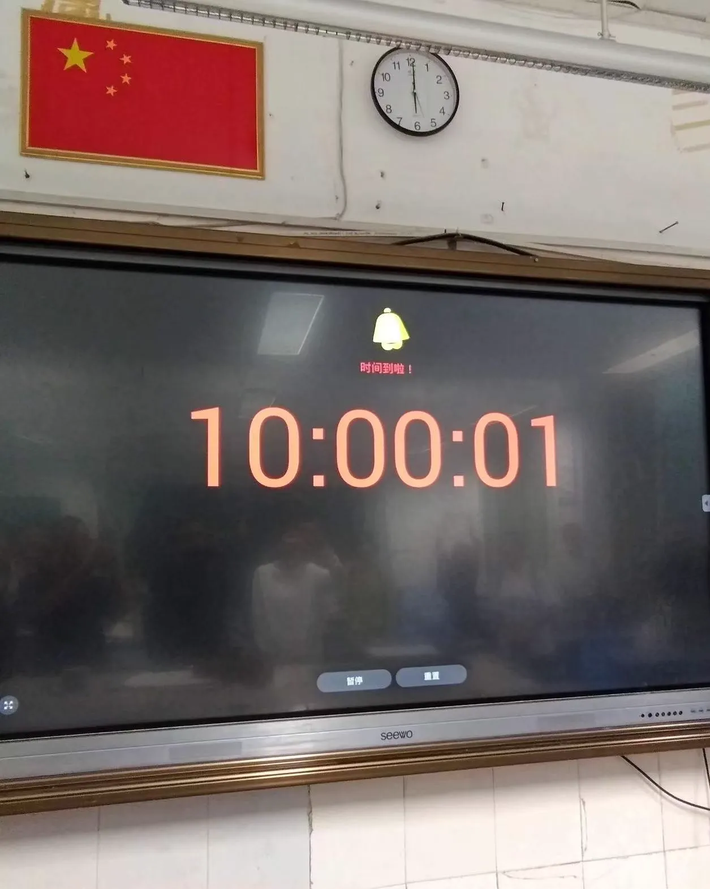

基础情况
| 校名 | 福州第四十中学 |
| 地址 | 福州仓山区三高路先锋路31号 |
| 创办时间 | 1993年 |
四十中占地面积34210平方米，建筑面积20937平方米，绿地面积10409平方米，是一所公办学校。
四十中获得了很多称号或荣誉，如：
- 福建省普通高中三级达标学校
- 福州市义务教育标准化学校
- 全国现代教育技术实验学校
- 福建省第十一届文明学校
- 福建省实施素质教育工作先进单位
- 福建省师德建设先进单位
- 福建省普通高中二级达标学校
校徽

四十中校徽出现在学校的各个地方，例如高中楼前、二号楼的展板上，四十中打印的练习中，校徽更是无处不在。
文化
文化方面，四十中有一大批口号：
| 校训 | 文明 勤奋 进取 创新 |
| 校风 | 爱校 守纪 自律 自信 |
| 教风 | 乐教 敬业 严谨 爱生 |
| 学风 | 勤学 奋进 求索 求真 |
校训、校风、教风、学风被写在五号楼的外面。
在这些内容中，四十中的校训最为经典，出现在了校歌中，也被写在一、二号楼间的连廊上。
而下面的四个口号很是冷门：
| 办学理念 | 一切为了学生发展 |
| 办学目标 | 师资优良 管理科学 质量一流 特色鲜明 人民满意 |
| 治校方略 | 以人为本 以德治校 以质立校 科研兴校 |
| 育人目标 | 道德高尚 人格健全 素质全面 特长鲜明 |
校歌
走向辉煌
集体 词/张笑容 曲
四季常青 阳光灿烂
四十中奔向希望
文明勤奋 进取创新
校训永不忘
面向现代争一流
把未来开创
培养四化接班人
为民族兴旺
啊 四十中
温馨的摇篮
我们美丽的学校
现代文明的旗帜
永远飘扬
英才辈出 桃李芬芳
四十中走向辉煌
诲人不倦 无私奉献
爱心在闪光
努力学习勤锻炼
不停地登攀
提高整体素质
向全面发展
啊 四十中
温馨的摇篮
我们可爱的学校
现代文明的旗帜
永远飘扬
四十中的校歌歌名为《走向辉煌》。
校歌的首次亮相是在一节音乐课上，在此之前大家都不知道四十中还有校歌。
当时正值班班有歌声的筹备阶段，每个班一共要唱两首歌：一首自选，一首便是校歌。
老师将歌谱发了下来。不过歌谱的制作显然不是那么好，比如附点、括号、连音线之类的符号还是画出来的。
然后，音乐老师给大家试听了一些校歌，刘老师也将校歌原唱和伴奏都发到了群里。
除了这次班班有歌声，校歌就再没有出现过，参与感非常低。
师生
四十中的核心领导有三个，他们经常在各种典礼上发表演讲：
有一个名词经常在四十中官网出现——教工天团。没人知道这个“教工天团”具体由哪些人组成，他们会出没在各种大型活动场合（如元旦汇演、中考送祝福），用别致的歌喉为学生演唱歌曲。
而当众人以为盛宴渐近尾声之时，教工天团闪亮登场，带来了一场别开生面的舞蹈串烧。《洗衣歌》、《新年快乐》等歌曲的旋律轻快活泼，老师们的舞姿俏皮灵动。台下的同学们纷纷为自己的老师加油助威，燃爆全场。（2025元旦汇演）
最后压轴的是由谢校长带领的教工天团演唱的《珊瑚颂》，致敬隐蔽战线上的忠诚儿女——吴石将军，以艺术之声讴歌英雄。（2026元旦汇演）
教工天团登台合唱《真心英雄》，悠扬旋律似涓涓暖流，萦绕校园每一个角落。（2026中考送祝福）
四十中对接以下小学：
几乎所有学生都来自这四所小学。
每届的招生人数都在增加。九班这一届共有16个班级，新的一届已经达到20个班级以上。这也是有班级安排在实验楼的原因。
九班所在的年段（2024届）约有800人。
官网
四十中官网：
https://wgw.weixiao100.com.cn/custom/wgw/index?schoolCode=92500135036
官网中记录了四十中的新闻——不过不完整，例如初二到爱国有方社会实践的事件根本没有。
对于一些主要的事件，可以通过“搜索”找到，下面列举一些：
点开官网的“学校风光”，三张校园“照骗”出现在页面上。
这三张照片和首页的轮播图一样，全都不是四十中的照片。而想要真正走近四十中——
基础设施
周边
四十中的正门位于先锋路旁。
限行
每到高峰期，门口的路必然拥堵。究其原因：
- 道路狭窄
- 这条路只有两条机动车道和两条非机动车道，比主干道狭窄。
- 小轿车的堵塞
- 小轿车是拥堵的重要原因之一。在上下学的高峰期，轿车会被大量电动车和行人堵在路中间，无法行进，同时进一步压缩道路空间。
- 两所学校同时上下学
- 四十中和仓实小的正门在同一路上。虽然两所学校上下学的时间不同，但偶尔会出现同时放学的情况（例如四十中布置考场，提前放学），加剧拥堵。
- 下雨
- 每逢雨天，大家都要撑伞，伞面挤占了大量空间，校门口的交通必然变成一团浆糊。这时连电动车都难以行进。
于是，每天的早晚放学时间，先锋路进行了交通管制。7:10左右，有交警在先锋路与三高路、先锋路与先锋支路的交界处摆放告示牌和交通锥，机动车不得入内；放学前也是一样。
但金彩新村的唯一出入口就在先锋路上，因此金彩新村的居民是例外，机动车可以自由出入。
很多机动车停在路边，这些车辆交警管不了。
这样一来，四十中门口的交通状况缓解不少；但偶尔会因为一些原因，导致拥堵仍然发生。最典型的情况是下雨天的放学时刻。
麦德龙臭水沟
四十中西边紧挨仓实小；南边隔着一条河，对面为麦德龙。
臭水沟靠四十中的岸边有一条小路，四十中的侧门就位于小路边；靠近先锋路的岸边是人行道。
而这条河很有故事。它是一条臭水沟——水很浑浊，当然味道倒是不大。在九班，这条河就被称为“麦德龙臭水沟”，经常被大家调侃。
自行车的停放
很多人会骑自行车上下学，自行车的摆放自然成了一个难题。对此，四十中多次在升旗后强调自行车停放和禁停的位置。
四十中校门两侧的人行道是不能停放自行车的；麦德龙臭水沟那一整条路都不能停车。所有自行车需要停在四十中对面或高中楼围墙后面的人行道上。
校门
正门（西门）
早期的四十中并非和现在一样。在建校初期，教学楼的外墙是白色的；而差异最大是是校门。
之前的校门口，一半是“福州四十中”的招牌，一半是出入口；改造后的校门进出的空间更大，为仿古牌楼式大门，融合了中式建筑相关元素。
门顶是镂空的屋檐形状，与左右立柱的交界处还有石雕构件。正中有一块牌匾，棕色木质，边缘有装饰纹样，中间写着金黄色的大字：
福州四十中
两根立柱上分别写着：
好好学习
天天向上
立柱前面各有一株盆景松树。
校门的左边有保安室，保安室的门前有供出入的门禁。如果在上学时间出入学校，就需要通过这个门禁；另外如果已经放学很久，大门关上，离开学校的学生也得从这里走。
右边是一堵墙，写着：
走进四十中
你是主人
走出四十中
你是形象
大门上面常年挂着两个灯笼。正前方有多个隔离桩。
侧门（南门）
侧门位于麦德龙臭水沟旁的小路上，因此地位非常尴尬。
在门外有一块空地，侧门旁白墙许多地方已经发黑，左侧墙体下方是土坡，右侧是杂草堆。
这扇门为双开，整体为两扇黑色金属门板，旁边有打卡机。
门的上方也有一块写着福州四十中的牌匾。
没有人发现侧门被开放过。
送餐处（北门）
北门位于高中楼与两层楼厕所之间，专门用于家长送餐。门的旁边有多个架子，家长可以把餐放到此处，下课后学生领取。也有很多家长会在这里等候。
同时，由于离停车场入口最近，这也是通往地下停车场的主要入口。
总体布局
四十中的布局大致是一半操场、一半教学楼。
从右到左依次为一、二、三、四、五号楼，最左侧为高中楼。
一号楼是行政楼，专供领导办公，学生不能无故进入。
一号楼与二号楼间有连廊，二、三层间的楼梯间可以通往连廊。
二号楼和三号楼是初中部的主要教学楼，两栋楼间有两道连廊，分别依附厕所和阶梯教室。
阶梯教室所在的楼房共三层。
四号楼和五号楼都有实验楼的功能，部分初中部教室设立在这两栋楼。
高中楼是高中的专用教学楼，高中部的所有室内活动均在这栋楼进行。
四十中正门两侧各有两栋长条形的小楼，分别是六号楼和七号楼，有综合楼的功能。
高中楼旁有一栋两层的楼房。虽然难以置信，但这栋两层的建筑就是一个厕所，当然没几个人去过。这里的一间房间也用于放置体育器材。
操场
操场的跑道规格为300米/圈。
跑道中央规划了多个球场，从左到右依次为：
| 排球场 | 排球场充分利用了弯道的空间，实际上排球场根本没有用作练习排球，倒是经常被用来练习篮球运球绕杆等。 |
| 足球场 | 由于场地限制，足球场不可能做得标准，但场上的线条都在。 |
| 篮球场 | 这里一连规划了三个篮球场，球场的大小也有缩水。 |
| 排球场 | 同最左边的排球场。 |
足球场和篮球场分别配有球门和球架。球架始终固定，但球门经常因为大小活动被移动位置。
在靠近学校边缘的一侧，有一个巨大、条形的白色棚子，用于遮阳。棚子有且只有在一侧设置多根支撑柱。
棚子的每个支撑结构末端都有一盏灯，傍晚后开启。
在棚子的两侧，各有一个沙坑。
八下时，棚子下方的墙面前加装了金属杆，可能会用作仰卧起坐。
操场最左侧有多个单杠，有高有低；单杠和跑道之间之间有专门用于跳远的助跑跑道，这块区域也可以承担投掷类运动。
操场最右侧是专门垫排球的墙面，墙面顶端有一段金属网，防止排球飞到外面——但还是有排球飞到外面。
三边的墙面上都有简笔画的彩绘，均关于体育，例如
- 棚子下的每块墙（墙壁被分为多个长方形小块）上都画了一个人做一种运动。包含蓝色（人物的颜色）、绿色和橙色。中间的几块墙上用红色写着发展体育运动、增强人民体质，两句话之间为奥运五环。
- 单杠旁的墙面上也有运动绘画。
- 垫排球的墙没有分为小块。墙上有人物垫排球的简笔画，并写着飞舞激扬青春 感受运动激情 体验排球魅力。
户外
喷泉
进入正门，有一个圆形喷泉。喷泉正中央有金属雕塑：雕塑底部是三本书，书上有一个球，球上有三只鸟往不同方向飞翔。
喷泉的四周摆着多盆花卉，喷泉内种有荷花。
喷泉前方有多个立牌，专门展示四十中的一些通知（如科艺节活动、“红榜”、元旦汇演节目单等）。上下学期间学生可自行观看。
话说这个喷泉在平常时候是不喷水的——除了一些很特别的场合，例如开学当天。小中考后，学生离开四十中时，喷泉也在喷水。
喷泉的边缘喷出水柱，洒向中间的雕塑，靠近喷泉时还能感受到零星水花。如果是晴天，能够看到鲜艳的彩虹。
生物园

生物园位于校门左侧、阶梯教室前，入口处有写着“生物园”的石板。
虽然是“生物园”，但这里并没有繁多的植物种类。在生物园，有树、有灌木、地上有长草，然后没了。
所以生物园的特色不在于生物种类。生物园中有石板路，石板路旁边有各种动物的雕塑：
动物雕塑旁是刻在石头上的介绍文字。
当然，在校门右侧，也有一个类似生物园的地方，里面最显眼的是一个地球仪的雕塑。
贩卖机
四十中的侧门旁边，有两个贩卖机，卖各种饮料。
这个贩卖机主要是供高中部学生购买，初中部的学生不能靠近。如果有初中学生到这里买饮料，将会面临扣分等惩罚。
不过这无法阻止一些人去买饮料。每到中午或体育课自由活动，就会有人偷偷到这里买饮料，一般不会被抓到。
垃圾屋
贩卖机和食堂之间有一个垃圾屋，是各种大袋垃圾的堆放地。户外值日生扫出的垃圾就扔到这里。
行政楼（一号楼）
一号楼共四层，顶部有红色大字“福州第四十中学”。
虽然没有人去过，但可以推测：这里是校长等领导办公的地方，也有心理咨询室、会议室等场地。
一号楼的一层是食堂，入口位于垃圾屋旁边。
教学楼（二、三号楼）
二、三号楼共五层，每层楼不仅有初中部教室，也有2间办公室。
二号楼与厕所的交界处有一个扇形的区域，这个区域只有两层。扇形区域旁边有无障碍通道。
二、三号楼中的连廊上有接水的开水池。
从正门进入，可以看到二号楼的外面有一块展板。
二号楼和连廊的交界处还有公示栏，很少有人去看。
教室
教室前方是黑板，黑板分为四块，中间两块拉开后，里面是一体机。
黑板上方有国旗、音响、时钟（各班的时钟款式不同，且根据班主任的要求拆卸或挂上）、风扇、监控。
最里面是展台和台式空调，空调前后可放置杂物。
教室后方的后黑板专门布置黑板报，上面有八字励志标语；教室的前后门为铁质，呈深绿色；教室顶部有风扇和灯。
讲台旁有小垃圾桶，各班班主任也可在讲台旁配备桌子，作为班级的“皇位”。
至于桌子——四十中有两种款式的桌子。
- 第一款桌子结构比较简单，核心特征是塑料桌面、铁质抽屉、抽屉旁的铁挂钩组成，是四十中的经典桌子。其配套的椅子有一体化的塑料靠背。由于大家喜欢往后靠，靠背经常有被压弯的趋势；塑料靠背和底部的金属椅子腿通过四个螺丝固定——螺丝经常被一些人拆掉。
- 第二款桌子有塑料的桌面和抽屉，在两个抽屉之间还有上下两个小储物格，通过推拉实现开闭。挂钩也是塑料的，可收起，桌子整体矮且厚实。配套的椅子较大，底下有放东西的地方，靠背和坐垫分开。这也是高中部的主要桌子。
两款桌子都是蓝色的，它们的挂钩经常被拆掉或损坏。
正常的桌子供两人坐，也有一人坐的小桌子。
教室中部突出的承重柱上有名人名言，同时其他墙面也有“学生风采”、“学习园地”等板块。随着班级的布置，各班还添加或改造了不同的板块。
每个班级都有一块突出来很多的承重柱，导致桌子都得绕开这里。这样承重柱后面的座位成了风水宝地，自己的行为不容易被老师发现。
不靠走廊的一边的窗户配备绿色窗帘，外面有防盗网。
教室外为密度板制成的卫生橱和垃圾箱。
卫生橱上方有书架，是布置班级的重要部分。
垃圾箱分为“可回收垃圾”和“不可回收垃圾”，实际上没有人根据其分类。
再实际一点，很多班级为了省事，会将垃圾箱的投放口用纸封上，甚至将垃圾箱转过去，让投放口面对墙壁，让大家丢不了垃圾。
办公室
办公室内的老师可以就近到自己任教的班级上课，但不是所有老师都能分配到教学楼办公室。
办公室的面积小于教室。一间办公室分为3排和2列，可供6名老师办公。靠里面的4位老师配置更完善，包括专门的L型办公桌、台式电脑、座椅等；而靠外的2个办公桌是由木桌拼成的，没有电脑。因此，不难得出
靠内的4个办公位是班主任的专用办公位；靠外的2个办公位灵活调配。
以八下的办公室为例。你可以在一天中的不同时段看到生物老师、语文老师、政治老师坐在外面的办公位；而里面的办公位分别被冯、刘、陈、张四个班主任占用。
办公室的门旁边有储物柜，存放本办公室所有老师的物品。台式空调位于办公室最里面。
办公桌旁的地面常被用来堆放新教材，例如《欢乐寒假》等。
老师可以自由整理自己的办公位，例如在墙面上粘贴课程表、在桌边挂签字的表格。
教学楼厕所
厕所——一个四十中的神秘场所，在各种学生的“维护”之下，造就了丰富的物种多样性。
拐入厕所门，映入眼帘的是三个洗手池——其实就是一个大池子，上面有三个水龙头。光是水龙头就战况百出：
- 有时水龙头前的起泡器被拆了，拧开水龙头，水流直接窜稀般喷出
- 有时水龙头会被整个扭转90度或者180度，水朝天上喷
- 有时连手柄都没了，这时候不是拧不开，而是没人想去拧
打开了水龙头，还只是第一关。凭借着四十中优良的排水系统，你能够看到“水漫金山”的场景。
比较常见的是在水池内漫水，例如在大扫除时经常出现这种情况。不仅漫水，而且这水还是混浊的，不知道有多少洗过抹布的水留在这里。
要么就漫在地面上——也就是原本要进排水管的水喷到地上了。还好，水一般不会深，不至于浸湿鞋子。
在洗手池旁，还有一个小的陶瓷池子，想是另有他用。
洗手池当然配备了洗手液。水池上方有一个金属架，上面摆着一瓶洗手液。
很多人根本不去瞥它一眼，更别提用了。有一次升旗后，有老师在主席台上教导大家爱护洗手间环境，说道
洗手液盒中不应该有的液体……
在这个区域的最深处，有一张木桌。木桌经常被用来临时放衣服。
接下来，大家就要正式进入厕所。
扑面而来的是四十中厕所特有的臭味——这是由千百个日夜积蓄、发酵而成的浓烈恶臭，甚至远在厕所外面就能闻到。
地面的水渍遍布整个厕所，隐约可见各种鞋印。
男、女厕所均有四个隔间。隔间之间被墙面完全隔断，上下都没有缝隙。隔间门使用铁门，铁门的高度大概与脖子齐平。
正常情况下的铁门可以凭借机械结构自动关闭，当有人开门离开隔间，没有关门时，门会逐渐关回去，然后发出“砰”的一声巨响。
由于其强劲的材料和结构，四十中的门向来保持完好，不至于被整个拆掉，但有些门变得无法自动关闭。
如果换衣服，一般都会进入隔间。由于里面没有架子，衣服只能挂在门上。
有冲水的装置，只是上面经常莫名其妙地出现淡黄色的水渍、纸巾等；有时按扭会凹陷或消失；甚至还有的水箱直接裂开。
水箱上面可能会贴一些告示，例如“便后请冲水”之类的。学生贴的就很好笑了，最典型的就是一张“小心同性恋”的贴纸。
隔间与外面有一个台阶的高度差，里面是典型的蹲坑。蹲坑里面可是有无尽的宝藏。
经常有蹲坑里出现屎，一般要拉开门才能发现。遇到这种隔间，大家都会躲开不去，这些屎在第二天就会被清理掉。
最狠的一次，男厕的第四个坑位出现了两条又粗又长的屎，足有小臂长度，且表面光滑、没有夹断痕迹——被大家戏称为“黄金巨蟒”，下课后有不少人前来参观。
和小学一样，男厕所的小便池就是一个长条的池子，中间没有隔断，当然这里鲜有“炸裂”的场面。
五楼铁皮房
3号楼有五层，2号楼也有五层。但只要仔细观察就能发现：2号楼的五楼和其他楼层有点不一样。
放眼望去，2号楼的五楼有着铁皮屋顶，走廊的栏杆上还有铁杆支撑着；而在另一侧，五楼有明显的银白色墙壁，和下方的瓷砖形成鲜明对比。
没错，2号楼原本没有五楼，现在看到的五楼是后来搭起来的！
虽然五楼的教室、走廊、门窗等一应俱全，但一到夏天，这里就会比其他地方更热。
水池
2、3号楼间有一个方形水池，水池中间有石头和植物的装饰。
原本水池里有水。在日复一日的光照下，池底逐渐堆积了黑色的淤泥。水里的情况也不容乐观，从远处望去，水微微泛绿，水面上还有一些活跃的虫子。于是这水就被称为草履虫培养液。
“草履虫培养液”给一些人带来的巨大的影响。体育课自由活动时，有人会在水池的两侧空地上打羽毛球，球一不小心就掉进去了。接下来，就会上演一场捞球的好戏。一般情况用球拍就能捞起来，近一点的话能直接用手捡起；万一球飞或漂到石头的间隙里就麻烦了，需要有人跨在石头上捡。
水池中有一个放水用的水龙头，有时捡起来的羽毛球会被放在水龙头下冲洗。
2025年4月7日，体育课前，水池边响起机器的轰鸣——“草履虫培养液”正在被抽干，一大爷赤脚踩在水池里打扫淤泥，上课前多人围观。清出来的淤泥被装到小车里。
从这之后，终于能看清水池底部的样子了——这个水池底部铺满蓝色瓷砖，有水管绕水池一圈，水管上伸出若干喷水口，应该和校门口的喷泉一样，是用来喷水的，只是从未启用过。
再后来，水池里又出现了一些淤泥，于是四十中干脆不在水池中放水，大家再也不怕羽毛球掉进去了。
广播室
靠近主席台的楼梯间中有一个小房间，里面有电脑等设备，专门用来控制全校的广播。
广播室外有铁门，有时铁门敞开，有老师从此出入。
电梯
很明显，电梯和教学楼的装修格格不入。教学楼的电梯位于3号楼的男厕所旁边，从走廊延伸出去，除电梯门外的三面都铺设了大号、磨砂质感的瓷砖；电梯到走廊的这小段距离还有玻璃窗。
因为只有这一台电梯，所以在开学初，老师再三强调：没有老师的允许，学生不得乘坐电梯。
电梯门旁边有一个刷卡装置，乘坐电梯前必须刷卡认证，从物理上防止学生坐电梯。
坐电梯的不仅有老师，也有送餐的工作人员。如果徒步扛着饭箱上楼会很累，有了电梯，就可以一次将几个班级的午餐送到相应楼层。
除高中楼和3号楼外，其他楼都没有电梯（1号楼的状况不明）。
小树林
2号楼靠操场的一侧，楼下有一块地方，被称为“小树林”。
小树林中只有几棵树，但把整块区域都遮住了。这里有几张石桌、一个垃圾桶。在2号楼的墙根处，还有一块“奠基石”。
阶梯教室所在楼房
这栋楼紧靠2、3号楼，外表呈红色，共三层，分别为
| 1F | 图书馆、党建文化长廊 |
| 2F | 阶梯教室 |
| 3F | 阅览室 |
进入四十中，左手边就能看到这栋楼。楼前有“Y”形的楼梯，也就是一个主楼梯上去，然后是左边和右边的小楼梯。
右边的楼梯通往教学楼，因此班级在2楼以上的学生大都选择从这里上楼，同时下方有通往1楼教室的地方。
左边的楼梯通往阶梯教室，其实尽头就是一扇小门，很少对大家开放。
党建文化长廊
这条走廊位于生物园后方，入口处有“为人民服务”五个大字。走廊的墙上有关于党史的展板，天花板上有红星装饰。
这条长廊是开放式的，没有老师禁止大家来参观，不过鲜有人经过这里。
图书馆
图书馆的入口就位于厕所对面，开门时间为-17:00，因此如果没有提前放学，放学后图书馆都是关闭的。
想要进入图书馆，必须凭借借书卡（老师统一带入除外）。
借书卡并非一开学就下发，而是在七上期中考前（2024年11月5日）发下来。借书卡的正面是四十中的高中楼图片，旁边用隶书写道：“福州第四十中学 借书卡”。背面需要自己用笔写上名字——一般的水笔很容易被抹掉，需要特殊的勾线笔才能写上去。
图书馆门口有防盗器，而最右边是一个架子，架子上的一个盒子里装满了代书板。
学生进入图书馆时都要领取代书板，离开图书馆时归还。
代书板是一个长方形的亚克力片，正面和背面都有红色字体，正面从上到下分别写着
背面是“读者须知”，从读者须知中便能明白代书板的用法。
读者须知
读者从书架取书时，应将代书板插在取书的位置上，如不借该书，必须把书归还原位，同时取出代书板，如确定要借该书，亦要将代书板取出，读者出书库时，必须将代书板归还工作人员，方能离库。
图书馆的正中央是咨询台，如果有人要借书或还书，都要到这里登记。
从入口右转，可以看到若干书架。除了独立的书架，墙上也布设了书架，书籍摆满整墙。
再往里走，有一张桌子和多个座椅，可以坐下阅读；为了充分利用墙面空间，图书馆的最里面有一道“U”形的台阶，从左边上台阶，穿过中间，再从右边下来，形成一条通道。这样，通道的下方和上方都能摆放书籍。
从入口左转，书架比右边密集得多——这是图书馆书籍的主要摆放区域，有着各种学科的书籍和工具书等。
一些人甚至在这里面找到了“惊喜”。有几次，几个人一起去探索图书馆，就发现了男性的科普书籍。
阶梯教室
阶梯教室承载了四十中的多项重大活动，例如：
平常也会用到阶梯教室：
在入学前的新生训练时，初一就来到了这间阶梯教室，段长等老师在此声明学校规则。
阶梯教室共三个入口，前排两个、后排一个。
最前方是一个舞台（其实只比地面高了一个台阶）；舞台前是一张木桌，领导等人可以坐在这里，不过大多数时候用不到。
舞台后面有一块大屏幕；上方有氛围灯；两侧都有柜子。
最右侧有一间隔起来的小房间，大概和广播室类似，用于调节阶梯教室的音响、灯光灯、屏幕。
阶梯教室有6个音响，分别成对出现在舞台旁、阶梯教室中部和最后面。
左侧有窗户和窗帘，窗帘一般拉起来。
阶梯教室共三个主过道（不包括最左侧和最右侧的通道），将座位席分为四个部分，每个部分分别有6列、4列、4列、6列，共20列。
前五排是普通的靠背木椅，并配备木桌。
后12排是阶梯教室的主要部分，有类似影院椅的座椅（坐垫可反转、有扶手、沙发式软垫），表面为浅灰色。
同时，每个座椅后方还有可伸缩的小桌板，其结构大概如下图所示：
从第五列开始出现了台阶，接下来每两排座椅位于同一台阶，总共有6个台阶。
整个阶梯教室共340个座位——还不够半个年段坐的。因此会出现以下场景：
- 家长会时只有1~8班到阶梯教室，9~16班在自己的班级开家长会
- 班班有歌声时先到的几个班级坐着看完全程，后面的班级因为没座位，唱完歌就得回班上课
- 新生训练时学生分2批到阶梯教室听讲
教室最后面堆满了可折叠黑色靠背椅，这些椅子用于各种活动的领导席；出口旁边还有LED数字显示屏，显示当前的时间，精确到秒，方面舞台上的人把握时间。
阅览室
阅览室位于3楼。严格来说，阅览室比真正的3楼要高一点。阶梯教室的层高比正常的一层楼要高，导致想要从2、3号楼走到阅览室，需要走上几个台阶。
只有在语文课开展读书活动时，学生才能到阅览室。虽然阅览室算作图书馆的延伸，但这里并没有与图书馆联通的楼梯或电梯。
九班去过2次阅览室，都是在七年级期间去的。进入阅览室前，学生带上自己要看的书，老师强调以下几点：
进入后，大家自行挑选座位坐下。阅览室的座位种类不少，有沙发式的座椅和桌边的座椅等。
有书架，但不多。书架上的很多书都被玻璃窗锁了起来，有人试图打开，但没成功；也有弧形的书架，这种书架就没锁起来，上面摆着的一般是很厚的书本，比如全套《辞海》。
沙发底下也有书架，坐在沙发上的人纷纷把这里的书拿出来看。
九班坐在靠窗的一块区域，而整个阅览室还有其他地方没有被探索。
说到靠窗，就不得不提到一件事。有一次大家去阅览室，一些人坐在了靠窗的桌边，中间竟然有人把借书卡从三楼扔到一楼！
这里的“扔”并不是指从窗户扔到外面。实际上，在桌子和窗户之间有一个挺大的空隙，这个空隙似乎直通一楼的图书馆，令人匪夷所思。
实验楼（四、五号楼）
实验楼中必然有生物、物理、化学实验室，还有电脑机房和器材室，一些初中的教室也安排在实验楼。这里的教室都比教学楼的教室大。
教室
两栋楼的实验室大同小异。
每排都有四张桌子，左右两张桌子靠在一起，由此形成每排的两张长桌。正常一张长桌坐4个人，而这里的桌面很宽，五个人坐都不成问题。
桌面均为青绿色，前面和左右侧有绿色的塑料挡条，固定挡条的螺丝经常拆掉，使挡条可以滑动，甚至直接消失。
桌面下有抽屉。
每张长桌下配备圆形的座椅。
前面的黑板是两大块，滑动一块后露出下方的一体机。
教室就是这样的布局；而不同的实验室有一些差别。
实验室
九班在生物课上第一次去的实验室（位于五号楼）装修明显较新，所有桌子都完好无损、无明显污渍。在桌面前有一盏长条灯。
这种桌子是连体的，每排共2张。桌子中央有一个水池，水池上有3个水龙头：两侧水龙头较矮，中间是一个比两侧高得多的U形水龙头。水管呈白色。
第二次去的实验室（位于五号楼）就不一样了。桌面上的绿色似乎是涂上去的一层，表面坑坑洼洼，前方的挡条也变成了木板做的，容易藏污纳垢——总体给人一种阴暗的感觉。
四号楼多为物理和化学实验室。普通的物理实验室和这里的教室一样，除了桌边多一个插座就没了。
而九班有一次去的物理实验室则配备了完善的电学实验设施，每桌前方都有梯形、固定的仪器，中间写着豪华型物理实验室设备。不过少部分按钮有被破坏的迹象。
电脑室
电脑室也叫机房，分布于四号楼的四、五楼。
进入电脑室后有一级台阶——为了防止静电，每间电脑室都会比走廊的地板高出一截，电脑室的地板上铺设了特殊的瓷砖——然而有些瓷砖已经松动，踩上去像是要掉落一样。
电脑室的布局也是每排两条长桌，每桌坐4人。每个人都有独立的电脑，桌面下方是主机。
有两种电脑室。
一种是学生日常上信息课的电脑室。这里的桌子是密度板做的，浅灰色表面。七年级信息课教室的电脑系统是Windows XP，八年级转到了五楼电脑室，这里的系统是Windows 7。
另一种教室九班只去过一次，是中考英语口语人机对话考试的地方，设备显然更好。每个人都有独立的单桌，四张单桌拼成长桌，桌子前方和左右有蓝色围挡，围挡上还有头戴式耳机。这里的系统是Windows 7。
讲台上的教师电脑，系统均为Windows 7。
和常规的电脑室一样，这里的电脑被老师操控，老师可以广播、发送文件，一般情况下网络被关闭。
高中楼
高中楼共十层，外表的装修没有其他楼房那样死板。例如走廊外面有类似多米诺骨牌的格子，两侧是红棕色的栅格装饰。
初中部接触高中楼的唯一机会便是中考，只有这时，大家才能到高中楼复习。
高中部的教室门由两个门组成，每个门上都有小窗户。
教室靠近走廊的一侧全部是被隔成方形的书架，里面全部堆满了书。
桌椅是九班曾在初一布置中考考场前后一段时间坐的款式。
高中楼的最左侧有厕所。高中厕所的配置真正接近了公共厕所，有完整的洗手池、隔间和小便池。
架空层
平日里，初中部的学生最多能到高中楼的架空层。架空层就是高中楼的一层，由于一层没有教室等房间，比较空旷，因此被用于举办一些活动。
- 架空层是进行体检和视力检查的固定场所
- 八下开学时的春联书写和游园活动在此开展
- 如果科艺节当天下雨，架空层就是跳蚤市场活动的备用场地。
当然，架空层中间也有一个房间，里面是楼梯间和电梯，是通往楼上的重要通道。
地下停车场
架空层右边有一个地下停车场的入口，通往四十中的地下停车场。
九班的男生在初一准备“中考送祝福”活动时，为了拿红毯，需要前往停车场。
和普通商场一样，停车场有着绿色漆坪、标线等，几辆车停在车位中。整个停车场不大不小。
综合楼（六、七号楼）
医务室、保安室、音乐教室、国画教室等都分布于综合楼。
两栋综合楼都各有两个楼梯通往二楼，不过综合楼开放更多的是一楼，九班从未去过二楼。
综合楼的走廊外墙有一些宣传栏，贴着四十中元旦汇演、社会实践等活动的照片；走廊外的承重柱上有被裱起来的美术作品。
电力
四十中的电力该正常的时候啥事没有，不稳定的时候是真的变幻莫测——不管是否是人为原因。下面有三个经典的例子。
变幻莫测的电压
刚升入初中时的开学典礼可谓意义非凡，标志着初中生活的开始。结果呢？
“大家掌声欢迎！”一阵热烈的鼓掌声后，校长走上主席台，开始发表讲话。
正当他渐入佳境时，突然跳闸了，没声音了。他看了看前面的话筒，没有头绪，只得看向旁边。
一旁的老师立刻慌张起来，跑来跑去的，最后拿了一个新的麦克风递给他，同时打开一台音响。
配对完成后，他继续刚才的讲话。虽然音响的声音远没有刚才大的，但也够应付接下来的讲话了。
讲了几句，好像广播行了。于是他将麦克风递给旁边的老师，继续使用前面的话筒。没讲完几句，又跳闸了。
旁边的老师又来递麦克风，讲几句后广播又好了，他又切换为话筒，接着又跳闸，又换话筒。
广播第三次恢复。这次，他把麦克风留在了自己手上。果不其然，第四次跳闸。这次，校长已经有了准备，他无缝切换为备用音响，动作行云流水。
这狼狈的讲话结束后，数一数，一共跳闸4次；回到班级后，又跳闸了两次。
像这样的连续跳闸在四十中并不罕见，已经发生了好几次，每次都是“跳闸、恢复”这一动作循环多次。七下的一节地理课频繁跳闸，导致地理老师只能直接讲；八下的一节物理课跳闸，等了好久才恢复。
有些时候，一来学校就是停电状态。例如七上一次刮台风，来校时灯打不开，倪浩宇称“刘老师叫电工修电”，不知道是不是真的，反正不久后电力就恢复了。
期末要大扫除。擦完电灯后，有一个人去开灯，结果听到“砰”的一声巨响，教室里的人看到一阵转瞬即逝的闪光，吓了大家一跳，然后灯也打不开了，据说一楼全部停电了。
主席台上的屏幕
主席台的后面有一块LED屏幕，可以显示活动名称或国旗下讲话的名称。
有一段时间，这块屏幕在刚打开时会花屏，然后从右到左慢慢恢复，显示出正确的字。
其他时候，左边的字可能会少掉一点，而且整天都不恢复。
四十中官网上有一张六一活动的图片，拍照时恰巧遇到左边缺字的情况，“福州四十中”的“福”没了，只好后期加上去。

不响的铃声
一遇到大型考试，四十中的铃声就会进入“紊乱”状态。原理很简单：考试当天是不能响铃的，而到了正常的上学日，铃声没有被恢复回来，导致又一两天全天没有上下课铃声。
有时候这还是局部的现象，会出现实验楼有铃声、教学楼没铃声的现象。
但跑操铃声总是准时响起。有时大家发现没铃声后，兴高采烈地认为不要跑操，到了大课间也确实没响跑操铃。结果跑操铃只是延迟了一会儿，最终还是响起，整栋教学楼就会传出一片哀嚎声。究其原因，跑操的铃声其实是单独控制的，例如下雨天就会有人取消跑操铃声。
除了不响，铃声偶尔还错乱。例如在2025年1月14日（周三）：
- 9:10响起预备铃
- 响铃响到一半停止，几秒后重新响起
日常作息
下面是四十中的官方作息表（出自开放周活动邀请函页面）：
| 周一 | 周二至周五 |
|---|
| 8:00-8:45 | 第一节课 | 8:00-8:45 | 第一节课 |
| 8:45-9:15 | 大课间 | 9:00-9:45 | 第二节课 |
| 9:15-10:10 | 第二节课 | 9:45-10:15 | 大课间 |
| 10:15-11:00 | 第三节课 | 10:15-11:00 | 第三节课 |
| 11:00-11:15 | 眼保健操 | 11:00-11:15 | 眼保健操 |
| 11:15-12:00 | 第四节课 | 11:15-12:00 | 第四节课 |
| 12:30-13:30 | 午休 | 12:30-13:30 | 午休 |
| 14:00-14:45 | 第五节课 | 14:00-14:45 | 第五节课 |
| 14:45-15:00 | 眼保健操 | 14:45-15:00 | 眼保健操 |
| 15:00-15:45 | 第六节课 | 15:00-15:45 | 第六节课 |
| 16:00-16:45 | 第七节课 | 16:00-16:45 | 第七节课 |
大体上是对的，但相比实际还是有点出入，因此下面才是四十中的真正作息。
| 周一 | 周二至周五 |
|---|
| 24-25（九班初一） |
|---|
| 7:05 | 开校门 | 7:05 | 开校门 |
| 7:25 | 点名 | 7:25 | 点名 |
| 7:30-7:40 | 学生组织早读 | 7:30-7:40 | 科代表组织早读 |
| 7:40-8:00 | 老师组织早读 | 7:40-8:00 | 老师组织早读 |
| 8:00-8:45 | 第一节课 | 8:00-8:45 | 第一节课 |
| 8:45-9:15 | 升旗 | 8:45-8:55 | 课间 |
| 9:15-10:00 | 第二节课 | 8:55-9:40 | 第二节课 |
| 10:00-10:10 | 课间 | 9:40-10:10 | 大课间 |
| 10:10-10:55 | 第三节课 | 10:10-10:55 | 第三节课 |
| 10:55-11:00 | 眼保健操 | 10:55-11:00 | 眼保健操 |
| 11:00-11:10 | 课间 | 11:00-11:10 | 课间 |
| 11:10-12:55 | 第四节课 | 11:10-12:55 | 第四节课 |
| 12:00-12:25 | 午餐 | 12:00-12:25 | 午餐 |
| 12:25-13:00 | 午托 | 12:25-13:00 | 午托 |
| 13:00-13:40 | 午休 | 13:00-13:40 | 午休 |
| 13:40-14:00 | 课间 | 13:40-14:00 | 课间 |
| 14:00-14:45 | 第五节课 | 14:00-14:45 | 第五节课 |
| 14:45-14:50 | 眼保健操 | 14:45-14:50 | 眼保健操 |
| 14:50-15:00 | 课间 | 14:50-15:00 | 课间 |
| 15:00-15:45 | 第六节课 | 15:00-15:45 | 第六节课 |
| 15:45-15:55 | 课间 | 15:45-15:55 | 课间 |
| 15:55-16:40 | 第七节课 | 15:55-16:40 | 第七节课 |
| 16:40-16:50 | 课间 | 16:40-16:50 | 课间 |
| 16:50-17:50 | 第八节课（晚托） | 16:50-17:50 | 第八节课（晚托） |
| 17:50 | 放学 | 17:50 | 放学 |
| 18:00 | 清校 | 18:00 | 清校 |
| 25-26（九班初二） |
|---|
| 7:05 | 开校门 | 7:05 | 开校门 |
| 7:25 | 点名 | 7:25 | 点名 |
| 7:30-7:40 | 学生组织早读 | 7:30-7:40 | 科代表组织早读 |
| 7:40-8:00 | 老师组织早读 | 7:40-8:00 | 老师组织早读 |
| 8:00-8:45 | 第一节课 | 8:00-8:45 | 第一节课 |
| 8:45-9:15 | 升旗 | 8:45-9:00 | 课间 |
| 9:15-10:00 | 第二节课 | 9:00-9:45 | 第二节课 |
| 10:00-10:15 | 课间 | 9:45-10:15 | 大课间 |
| 10:15-11:00 | 第三节课 | 10:15-11:00 | 第三节课 |
| 11:00-11:05 | 眼保健操 | 11:00-11:05 | 眼保健操 |
| 11:05-11:15 | 课间 | 11:05-11:15 | 课间 |
| 11:15-12:00 | 第四节课 | 11:15-12:00 | 第四节课 |
| 12:00-12:25 | 午餐 | 12:00-12:25 | 午餐 |
| 12:25-13:00 | 午托 | 12:25-13:00 | 午托 |
| 13:00-13:30 | 午休 | 13:00-13:30 | 午休 |
| 13:30-14:00 | 课间 | 13:30-14:00 | 课间 |
| 14:00-14:45 | 第五节课 | 14:00-14:45 | 第五节课 |
| 14:45-14:50 | 眼保健操 | 14:45-14:50 | 眼保健操 |
| 14:50-15:00 | 课间 | 14:50-15:00 | 课间 |
| 15:00-15:45 | 第六节课 | 15:00-15:45 | 第六节课 |
| 15:45-15:55 | 课间 | 15:45-15:55 | 课间 |
| 16:00-16:45 | 第七节课 | 16:00-16:45 | 第七节课 |
| 16:40-16:55 | 课间 | 16:40-16:55 | 课间 |
| 16:55-17:55 | 第八节课（晚托） | 16:55-17:55 | 第八节课（晚托） |
| 17:55 | 放学 | 17:55 | 放学 |
| 18:05 | 清校 | 18:05 | 清校 |
| 26-27（九班初三） |
|---|
| 7:05 | 开校门 | 7:05 | 开校门 |
| 7:25 | 点名 | 7:25 | 点名 |
| 7:30-7:40 | 学生组织早读 | 7:30-7:40 | 科代表组织早读 |
| 7:40-8:00 | 老师组织早读 | 7:40-8:00 | 老师组织早读 |
| 8:00-8:45 | 第一节课 | 8:00-8:45 | 第一节课 |
| 8:45-9:15 | 升旗 | 8:45-9:00 | 课间 |
| 9:15-10:00 | 第二节课 | 9:00-9:45 | 第二节课 |
| 10:00-10:15 | 课间 | 9:45-10:15 | 大课间 |
| 10:15-11:00 | 第三节课 | 10:15-11:00 | 第三节课 |
| 11:00-11:05 | 眼保健操 | 11:00-11:05 | 眼保健操 |
| 11:05-11:15 | 课间 | 11:05-11:15 | 课间 |
| 11:15-12:00 | 第四节课 | 11:15-12:00 | 第四节课 |
| 12:00-12:25 | 午餐 | 12:00-12:25 | 午餐 |
| 12:25-13:00 | 午托 | 12:25-13:00 | 午托 |
| 13:00-13:30 | 午休 | 13:00-13:30 | 午休 |
| 13:30-14:00 | 课间 | 13:30-14:00 | 课间 |
| 14:00-14:45 | 第五节课 | 14:00-14:45 | 第五节课 |
| 14:45-14:50 | 眼保健操 | 14:45-14:50 | 眼保健操 |
| 14:50-15:00 | 课间 | 14:50-15:00 | 课间 |
| 15:00-15:45 | 第六节课 | 15:00-15:45 | 第六节课 |
| 15:45-15:55 | 课间 | 15:45-15:55 | 课间 |
| 16:00-16:45 | 第七节课 | 16:00-16:45 | 第七节课 |
| 16:40-16:55 | 课间 | 16:40-16:55 | 课间 |
| 16:55-17:55 | 第八节课（晚托） | 16:55-17:55 | 第八节课（晚托） |
| 17:55 | 放学 | 17:55 | 放学 |
| 18:05 | 清校 | 18:05 | 清校 |
观察发现，四十中的“官方”作息表与实际情况最显著的区别有：
- 去掉了早读和晚托、晚自习
- 将中午的作息统称为“午休”
同时，初二时的作息相较初一时有略微调整——都是调晚：
- 第一节课课间时间延长5分钟，午餐时间延迟并减少5分钟
- 第七节课课间时间延长5分钟，放学时间延迟5分钟
也不知道这么改的原因。
下面，就走进这张作息表，详细分析。
第一节课前
四十中没有禁止早到。正常大约7:05才会开校门，在这之前，早到的学生需要在门外等候。
早读开始前，学生可以进校。安排到值日的学生去做包干区卫生，其他人就在班上。
早读在7:30开始。为了让大家在早读开始后能立刻进入状态，各班班主任都安排了更细的作息规范，将其他的杂事安排在早读前完成。
以九班为例，全班在7:25前需要到班，不能迟到或踩点。7:25后，值日班长需起来点名，同时组长和科代表收作业，7:30时准时开始早读。
而在早读开始前的一段时间内，学生相对自由，这就会出现一个现象：有人回家后不写作业，专门等到来校后找别人抄作业。
对此，四十中早有防备。
早抄
对此现象最直接的规定是：不得在到校后至早读前这段时间内补作业。但现实中经常发生歧义，例如一个人在纸上写东西，无法判定他是否在补作业。于是，四十中就采用了“一刀切”的方式，规定：
除承担必要职责的学生之外，不得在到校后至早读前拿笔。
违反这条规定的人就被判定为早抄。也就是说，以下行为都是早抄：
- 拿起笔写字
- 拿起笔，但没有写字
- 拿起笔，但这支笔没有笔芯
有一些人（例如值日班长、科代表、组长）需要在早读前，根据老师的要求登记东西，不得不拿笔，这是唯一的例外，不算早抄。
每天早读前，会有学生到每个班级巡查早抄情况，并登记有早抄的班级。
校规和各班班规都对早抄给出很重的处罚。在九班量化规范中，一次早抄扣10分，如果被年段（就是到每个班级巡查的人）发现，双倍扣分。
起初，早抄得到了良好的执行，没有人敢在早读前写东西；随后就有人在抽屉里偷偷写东西；再后来，早抄对学生完全失效。来到班上，很多人的第一件事就是找别人要作业并抄作业。此时，抄作业的人直接放在桌面上写，并形成了习惯；有些人并没有要补的作业，但也会写一些其他东西。
来巡查的人也逐渐松懈，就算班上有很多人早抄，也一般不会扣分——就是走个流程罢了。
唯一需要防备的是老师。刘老师向来对早抄严肃处理，她来到班上时，经常会有人被抓到并扣分，严重一点的话，提供作业的人也要被罚。
早读
一般第一节是什么课，早读就读什么。八年级时，刘老师觉得数学早读的内容没有太大必要去读，因此会让大家在7:40前安排政治、历史早读，7:40后再读数学。
7:30会响铃一次，铃声是《好一朵茉莉花》的旋律。八年级后，7:40也会响铃一次。
7:30到7:40的早读由科代表组织，这时科代表需要上台带读。一些老师会在这时进班，也有一些老师在7:40以后才进班。
7:40后的早读由老师组织——如果老师没来，还是科代表带读。
名义上是“老师组织”，但老师进班后是否继续早读完全取决于老师的习惯。一些老师（如刘老师、语文老师）会继续让大家读书，一些老师则会直接开始上课（如数学老师）。早读和第一节课无缝衔接，因此在学生看来，第一节课的时长远不止45分钟，而是长达65分钟（不算科代表早读）甚至75分钟（算上1科代表早读）！
课堂与课间
一般地，一节课45分钟，一个课间10分钟（初二以后有两节15分钟的课间，每天有30分钟大课间）。实际上并非如此。
课前三分钟
四十中最坑人的制度之一便是课前三分钟，顾名思义就是在上课前的3分钟需要回班。
课前3分钟会响铃一次，正课开始时也会响铃一次，第二次的铃声也是《好一朵茉莉花》的旋律。
不知道其他班的规定，但对于九班，课前三分钟响铃后需要立刻回班，科代表组织课前三分钟的读书，纪律要求和正课一样。刘老师会不定期前来巡课，如果发现课前三分钟纪律欠佳，会对九班采取严厉惩罚，最经典的惩罚是课后留下教育。
于是，课间与正课的比例进一步失衡。如果没有拖课，课间时间被压缩至7分钟；同时上课时间延长至48分钟。
眼保健操
上午第三节课、下午第一节课（第五节）的课后有5分钟的眼保健操时间，不占用课堂和课间时间。
眼保健操在初中的存在感极低，几乎没有班级会选择做眼保健操。老师们喜欢趁着眼保健操，把课再讲一点，哪怕没讲课也是让大家自习。在九班，唯一让大家做眼保健操的老师是初一的美术老师。
眼保健操时，没有人会在每个班之间巡查做眼保健操的情况。但眼保健操期间属于“上课时间”，非必要不得出班级，这倒有评比组的学生去巡查。有一次，九班就因为眼保健操时出班级被扣26分。
大课间活动
周一和其他日子的唯一区别就是早上的大课间活动时间。周一的第一节课后就是大课间活动，这个大课间主要用来进行升旗仪式；周二至周五的大课间活动安排在第二节课后，一般用来跑操。
如果有下雨、占用操场、铃声坏了等情况，则大课间活动不安排升旗或跑操，就是纯正的27分钟（课前三分钟占了3分钟）的下课时间。
如有升旗或跑操，四十中会播放经典的《运动员进行曲》。一旦听到该铃声，全体学生需要下楼集合。这段铃声一般响5分钟。
升旗和跑操的队伍有一定区别。
升旗时，学生只需站在原地，因此站得更加紧凑，所有人都集中在操场前方。
跑操时，由于需要有跑的空间，队伍间的间距会很大。
升旗
国旗队专门负责升国旗，成员每年更换一次。每次升旗，他们都需要穿上相同的军装。在学生集合的同时，国旗队也要到2号楼旁的树荫下站好等候。
每个班级站成两列，男生一列、女生一列，班主任在最前面。主席台上会站着6~7个领导，他们大多数背着手。
队伍不是站好就结束了。每次（真的是每次）学生已经站好、根据班主任的要求对齐时，段长就会走过来，旁边的班级开始挪动位置——每个班级只好重新挪动位置、重新站好、重新对齐，这个操作有时要一连进行3次甚至更多次。
集合铃声结束后，升旗仪式就开始了。
大致流程如下：副校长喊：
好，我们先整一下队伍。
有戴帽子、有撑伞的人，把帽子和伞收起来。
立正！
升旗仪式，现在开始。旗手出旗！
戴帽子、撑伞的都是老师，这种现象在夏天尤为明显。很多老师为了避暑，会戴各种款式的帽子，少数老师还会撑伞，在人群中尤为显眼。听到摘帽子、收伞的命令后，并不是所有老师都会立刻这么做。副校长一般会再次提醒，这时升旗仪式真的要开始了，老师们才会真正收起帽子和伞。而国歌一结束，他们又会很有默契地一同戴上帽子、撑起伞。
《歌唱祖国》音乐响起，国旗队先是原地踏步，然后带头的人喊：“齐步——走！”国旗队的所有人开始向前走动，具体姿势和龙翔的齐步走一样，属于正常走路。到了主席台面前，带头的人又喊“踏步！”，所有人转为踏步前进，并在即将离开主席台前的时候变回正常齐步走。
到达旗杆前，国旗队前一排的三个人向右转，并走上旗台，其他人原地踏步片刻，然后向右转，站定。走上旗台的三人固定国旗。
音乐停，副校长喊：
升国旗。奏唱国歌。行注目礼、少先队礼。
这里默认少先队员（也就是初中部所有学生）敬礼。
国歌只播放一遍，全部人唱国歌，同时升旗。国歌播放完毕，副校长喊：“礼毕。”
然后，正常情况进行国旗下讲话，举办比赛后可能将国旗下讲话改为颁奖。
国旗下讲话的主题无非是防溺水、食品安全、防灾减灾、感恩××节日、诚信考试之类的。主题都会在主席台屏幕上显示。
领导下面有请××（年段）×班的×××讲话，大家掌声欢迎。
（掌声）
讲话人尊敬的老师，亲爱的同学们，大家上午好！
…………
我的讲话完毕，谢谢大家。
（掌声）
讲完后，会有经典的总结环节。副校长会对讲话人的观点表示认同，并进一步阐明这个主题的重要性，然后进行补充。
如果是颁奖，则集合时广播会让获奖的人先到旗台旁的树荫下集中；主席台上会提前摆好桌子，上面有奖状、奖品。
江书记会分多次念出获奖名单：
我宣布，获得×等奖的有：××（年段）×班，×××……大家掌声欢迎。
这些人会走上主席台，领取奖状和奖品，领奖时播放背景音乐（这首音乐名称未知，在每次颁奖时从未缺席）。领完奖后，他们从另一侧下台，并走到主席台下拍照，拍完照后回位，继续宣读下一奖项。
国旗下讲话和颁奖结束后，副校长会说
请台上的老师先退场。
这几个老师会从右侧离开主席台。接着，德育处的主任可能就要来讲一些事情了，好一点的事有失物招领什么的，坏一点的事一般都是×××在某个时刻做了某件坏事，要求在放学前承认。
副校长可能也会讲一点什么，例如某活动的报名、自行车停放位置等。
最后，各个年段一次解散。解散的顺序是随机的，像是这样：
高一解散。初三解散。高二解散。高三解散。初一解散。初二解散。
或者整个初中部、高中部同时解散：
初中解散。高中解散。
跑操
早在开学初，老师就声称跑操是四十中的“经典项目”。四十中在建校初期安排在大课间做广播体操，后来改为跑操。
初一、初二在操场上跑操；初三要准备体育中考，同时由于操场的场地限制，需要绕学校跑。高中部的跑操情况未知。
初三体育中考结束后，初二作为“准初三”学生，提前转为绕学校跑；初三转为在操场上跑。
初三先开始跑，几秒后音乐播放，初一、初二的学生开始跑。
四十中每年还会举办一次冬季长跑，看着挺高大上，跑前甚至还有发令枪，结果还是常规的跑操，除了多一个发令环节就没什么特别的了。
四十中播放的是中小学经典的跑操音乐（一！二！三！四！一二三——四！）。
跑操一般持续5分钟（但感官上绝对不止5分钟）。这期间，在操场上的队伍平均跑7圈，每次的圈数一般在5圈到9圈之间；绕学校跑的学生一般都跑2圈。
跑操结束后，学生慢慢走回原来的位置，然后解散。
初一、初二的跑操队形分两种情况。
- 单列
- 初一和初二下学期均采用此方案，学生排成一列跑操。
- 双列
- 初二上学期尝试将跑操方案调整为双列，即一排有两个人并排跑步，对队形有更高的要求。这种方式让单个学生前后的人更多了，方便学生跑操时聊天。在初二下学期，四十中毫无预兆地调整回单列的方案。
在两种情况中，变量仅为队伍的列数。跑步规则是一样的。
初始状态是正常排好的队伍，每个队伍站2个班级的学生。例如，9班是队伍的前一半，10班是后一半。一个班内，女生在前，男生在后。
跑操前，每个班需要派一个人领取2个标志桶，放到队伍所在直线的田径场与跑道交界处，跑操结束后归还标志桶。
所有学生按照“O”形，绕标志桶逆时针慢跑，除了在标志桶拐弯处，其余时候均要保持队伍为一条直线。
老师尤为强调“慢跑”。这不是赛跑，跑操的速度要保持慢而均匀。各个队伍的领队都能保持速度慢而均匀，但越是后面的人，配速就越乱。
我们来分析一下罪魁祸首。其实原理类似于“幽灵堵车”。前面的人跑起来后，后面的人需要等到前方有一定的空间才能开始跑，所以跑操音乐响起后，后排的人往
往需要再等一下才能跑起来。
当前面的人已经跑到后面，即将绕完一圈时，最后一个人才开始缓慢跑动，这块区域的速度就被迫降下来。
另一个原因是每个人的速度不一。如果某处发生了一些事情，速度就自然降下来了。而当一个人先慢速跑，然后突然加速，也会加剧这种配速的不均匀。
还有些人始终保持慢速跑（如黄丰泽），其后面跟着几个人。在一列跑操队伍中，会出现多个这样的断层，这里的几人速度较均匀。
在实际跑操时，经常从操场前往操场后跑的速度正常、操场后的速度很慢，往操场前跑的速度又巨快。
但即使处在一个速度很慢的区域（哪怕已经停滞不前），也不能走路或者停下。这就涉及到跑操时的一个特殊职位。
每个班级选举出一到两位学生，作为年段的评比组，在跑操时监督其他班级，每次每个队伍仅一人监督，因此如果一个班有超过两人被选入评比组，需要轮流监督。评比组学生需拿一本笔记本，站在标志桶旁或者前后走动，登记扣分情况。
第一个监督项目就是跑步。队伍中的人在跑操结束前必须始终保持跑步状态，不得走路、停下。如果位于慢速区域，则需要原地跑。
在刘老师的“压迫”下，九班的跑步情况保持良好，基本没人走路；但旁边的几个队伍就出现了大把走路的学生。
很多人会以“系鞋带”为理由，在跑步时脱离队伍，争取少跑一会儿。对此，年段也规定：
跑步时不得停下系鞋带。
这的确能防一些偷懒的人，但不少鞋带真的松掉的人却因此无法停下系鞋带，只能硬着头皮继续跑。为了尽量避免这种情况发生，德育处主任经常在跑操前让大家检查鞋带，刘老师还会让体育委员走一圈，提醒大家系好鞋带。
规定有了，就要看实施得怎样。刘老师再次发挥了重要作用，9、10班队伍很少有人停下系鞋带（不过偶尔有人鞋带真松了，跑到操场后方式赶紧停下系好）。
其他班可是另一派景象。每次跑操，操场后方的棚子下总会聚集起十几个“系鞋带”的人。他们蹲在这里，一来少跑步，二来不用晒太阳，三来可以聊几句。
不见得这些人会被评比组或者他们班的班主任整治。他们每次就蹲在那里，直到跑操结束。
第三个监督的是口号。在跑操一段时间后，老师要求所有人在音乐中出现“一二三四”后跟着喊“一二三四”，并且声音要响亮、有力量。
刘老师鼓励大家喊口号时，说大家平日里学习压力已经很重了，跑操时喊一喊，就当作释放压力。她还让几个喊得响亮的人起一个带头作用，促进队伍的口号声响亮。
不错，每次刚强调完口号要求的几次跑操，口号声都能做到响亮；越到后面越没人喊口号了。
没关系，四十中整体喊口号的情况还是比较乐观的。比如九班的旁边一列队伍，有一个人非常亢奋，每次都扯着嗓子喊口号，不说还以为在军训。
台上的老师不时让大家喊出声来，偶尔还会自己带头喊。
虽然九班的口号情况马马虎虎，但总能与评比组保持着一种微妙的动态平衡。大部分时候都相安无事，但一旦有事，九班学生就会被罚得很惨。
刘老师让监督九、十班的评比组学生每次跑操结束后都要汇报九班的情况，有人走路、系鞋带或者口号声不响都要告诉她，因此解散后九班总是要等三十秒左右才能走。
九班因为口号问题或者走路被留下来好几次。初中解散后，前面的人迟迟没有动静。然后，男生往前走动，走着走着突然停下，原来是刘老师让站成两列。
刘老师慢慢地走到后面，用很小的声音说道：“知道你们为什么被留下来吗？”
操场上大部分班级都已经离开，教学楼热闹非凡。阳光直射在操场上，有点刺眼，空气中弥漫着汗臭味。
九班被罚继续跑操。放眼望去，还有两三个班也被留下，正在跑操，他们的班主任正冷冷地盯着他们。
有几个高年段的学生来打篮球，扣篮声、喊声在这空旷的操场上扩散。
操场上响起了“一！二！三！四！”的喊声，声音尖锐、响亮、有力。
一些人眼神犀利，看刘老师很不满，在刘老师离自己没那么近时就和旁边的人说：自己直接摆烂了，不跑了，大热天的还要留下来……
太阳依然那么刺眼，抱怨的人话放得再狠也只能随着队伍跑起来。有时候并非全班留下，而是几个被评比组学生点名“没喊口号”的人留下来跑，又或者女生没有人在走路，女生可以先回班，男生？先跑几圈再讲。
又或者是搞服从性测试。不喊口号是吧？那我们一个个过关。你先喊一下。一！二！三！四！这不能喊得响亮吗？刚才怎么就不喊了？那以后能不能喊得和现在一样响亮？能，那先回班，下一个。
终于回班了，班上大多数人已经凉快下来，三五成群地聚集在一起闲聊。上课铃响了。
初三（准初三）的跑操格局就很不一样了。首先看路线。集合时不在操场集中，而是在制定的位置站好（九班就在一、二号楼连廊下集中）。跑操时，大概经过这些地方：
- 一、二号楼连廊
- 主席台前
- 五号楼后
- 高中楼前
- 七号楼与生物园之间
整个路线形成一个矩形。队伍则变成了六列，需要保持横纵对齐。最前面需要有人拿着班旗带队。
2026年4月28日，初二年段正式开始绕学校跑。很快大家就发现了它的优点。
第一，没想到绕学校跑的速度这么慢。刘老师让带队的人一定要跑慢点，不过前面的班级就跑得挺慢，九班再怎样也没法比前面快。每次都是刚跑完两圈音乐就停了。
第二，绕学校跑的路上有不少树荫。终于不需要忍受操场上的全太阳配置了。
第三，也是最重要的一点，久违的自由回来了。
刘老师总没办法跟着九班跑吧？跑操时，她就站在连廊下，哪都不去，因此只要离开了刘老师的视线范围，大家该讲话讲话，该开玩笑开玩笑，不会被发现。
虽然路上有不少老师，但他们一般都不去管其他班的跑操情况。评比组的监督效果也被削弱了。
终于不要喊口号了，毕竟监督难度这么大，没人真去管口号。
可以走路了。走路的高发区域是五号楼后到生物园前的这块区域。这里基本没有监督的人。前后的队伍经常在此处停下。
午托
午托时学生默认在学校，想进出校门得申请，很麻烦。
第四节下课后就是午餐时间。到了12:25，所有人就得进班了。
刚开始是没有任何午托铃声的，因此各班都发展出一个职位，专门在午托快要（注意是快要）开始时吹哨，每次午托时都会响起此起彼伏的哨声。后来九班没吹哨了。但似乎学校有专门的人吹哨。
八年级后，午托有铃声了。同时副校长会在广播中喊道：
现在是午托时间！
午托时间有半小时，说白了就是用来上课的。到了下午1点整，每个班安排午休，每个班都把灯关闭。
午休最主要的事就是睡觉，当然也允许自习。偶尔刘老师看班时会要求所有人睡觉，一般是期中、期末考前，刘老师不想让大家在考场上犯困。
不过也可以小范围处理一些事，比如叫几个人去办公室谈话、让小测没过关的人上来过小测等。
午休结束后的课间时长仅次于大课间，是最重要的课间之一。
晚托
我们先从一张课程表入手。
在每学期的第一天，刘老师会在群里发出这学期的课程表，大家可以简单抄下来，但不建议打印，需要等到完整的课程表出来后才能打印。
那完整的课程表和刚开始的课程表有什么区别？
显然，刚开始的课程表没有午晚托的安排，而新的课程表将午托和晚托的课程加了进去。
在进入初中后老师发的作息表中，有一个课后延时服务，但上面提到的四十中官网中的官方作息表没有。仔细看就能发现——官网作息表图片的下方有突出来一点的单元格线条，官网把“课后延时服务”这一格裁剪掉了！
这“课后延时服务”的地位也就很清楚了。课后延时服务，又名晚托或第八节课，在开学初期以普通正课的身份存在，似乎这本来就是四十中课程的一部分。
第八节课长达一小时。特别地，原本周三下午只有两节课，为了填满这原本缺失的一节课，四十中有安排了一节45分钟的晚托，即周三下午第三节课是晚托。
晚托的安排是这样的：周四的晚托是活动课，每周有一节体锻课，每个年段的体锻课时间不一，例如初一是在周一，初二是在周二。剩余的3节（严格来说是4节）则安排各种主科课程，老师可以在课上安排上新课、复习、讲评作业、自习等。自习的情况少之又少。
刚开学时晚托的安排还没出来，都由班主任来上。快要期中考（期末考）了，要进入复习状态了，体锻课和活动课就给班主任上吧。体锻课经常没有安排活动，嗯……班主任来上。这落实到九班后，就体现为英语课数量暴涨。
就这么迷迷糊糊地上完了半个学期的晚托，家长群突然出现了一条消息：需要交整学期的晚托费，一共594元。
@所有人 有2项费用需交：
1、第四节晚托费
（下午第四节课晚托，交的是整个学期）
2、11月午餐费
大家请尽快交一下[抱拳][抱拳][抱拳]
这个费用全年段都得交，每个月按22天算，每天6元，本学期按照4.5个月收取，所以总共594元。
哦对了，请假的不扣除。如果你有几天因为请假没有上下午的晚托，钱还是照样交，每个人交的钱是一样的。
体锻课
初一的体锻课在周一，初二的体锻课在周三。
正常情况下，段长会同本年段的几个体育老师安排体锻课的活动内容。如果有安排活动，全年段的学生需要到操场，按照升旗队伍集合；如果不安排活动，则这节课变成班主任的课。
体锻体锻，就是体育和锻炼。偶尔段长会安排大家进行一些比赛，例如每个班级接力跑。
每个班级的男生和女生分别站在操场两侧的跑道上，比赛开始后，前面的一个跑到对面，与对面的人击掌，对面的人同样跑到对面击掌，以此类推。
不过这终究是少数，更多时候的体锻课没有激情的比赛环节，取而代之的是跑操。
体锻课的跑操环节一点也不逊色于大课间跑操。学生排成和跑操一样的队形，然后台上的几个老师用音响播放跑操音乐（不能使用广播），声音跑到远处就会小到听不见。
这时的单次跑操圈数和大课间跑操差不多，然而一节体锻课上需要多次跑操，例如
- 2025年2月28日体锻课，全年段共跑操17圈
- 2025年10月11日，男女轮流跑操，各跑2轮
这里以10月11日的跑操为例。男生跑操时，女生就在原地安静站着，男生跑到前面时需要绕过女生队伍，反之亦然。不过无论男女生都不可能做到安静站好。
第一轮，男生跑步的速度极快，主要是体育课上活跃的几个人带块了速度，一连跑了7圈多后，一些人已经气喘吁吁，出现了明显的断层，但仍然没有结束跑操的命令，当跑操结束后，很多人都在吐槽。
女生开始跑操，速度没有男生那么快，甚至有轻松之感。一圈、两圈……台上的体育老师鼓励道：“坚持住，时间还没到！”跑完几圈之后，女生结束跑操，回到原位。
开始第二轮跑操！
听到还有第二轮时，刚吐槽怨的几个人抱怨声不断。快跑几圈后，见有些人想要摆烂，台上老师厉声提醒：“还没跑完！”
最后，女生跑第二轮，跑操结束。
刘老师摆出经典的不满神态，走向九班队伍。她告诉大家，刚才男生休息时非常吵闹，女生则安静休息，接着反问：男生要不要跟女生一起跑？
台上的体育老师也总结起刚才大家的表现。大部分班级的女生跑步时都很正常；男生跑步时都是一团乱，表现很差。
他让女生解散回班，但有3个班的女生也被留下；全年段的男生全部留下。
被留下的人又被罚跑了三四圈。和刚才的热闹场面不同，这次的跑操只有踩草地的声音。天色已暗，操场棚子上的大灯直射在草坪上，竟有一种阴森的氛围。
终于跑完。回班。
这告诉我们：体锻课的活动任务结束后，几乎都要因为纪律等问题被台上的段长或体育老师批评一顿，倒霉的话还会有罚跑这项惩罚。
活动课
活动课的时间为每周四的晚托，是大家为数不多放松的时刻。
在新初一开学初，完全没有活动课，大概期中考了，才开始活动课的选课。
活动课按照科目开展，有：
| 科目 | 项目 | 地点 |
|---|
| 语文 | 名著影视欣赏 | 12~13班 |
| 数学 | 数学思维拓展活动 | 8~11班 |
| 英语 | 英语电影及歌曲欣赏 | 14班 |
| 政治 | 时政热点论坛 | 7班 |
| 历史 | 中华古代文明研究 | 6班 |
| 地理 | 地图阅读能力的培养 | 地理活动室 |
| 生物 | 走进生物 | 15班 |
| 音乐 | 合唱 | 音乐教室2 |
| 美术 | 中国画的笔墨情趣 | 国画教室 |
| 信息 | C++编程 | 机房4 |
| 体育 | 排球 | 排球场 |
| 篮球 | 篮球场 |
| 羽毛球 | 田径场 |
其中，数学思维的人选已经提前定好，因此不能更换、无需选课；其他人需要记住选课账号，2024年11月7日，除被数学项目选中的学生，其他人全部去电脑室选课。
初一年段的各个班级依次到电脑室选课，而每个项目的名额是固定的。因此九班到达电脑室后，受欢迎的体育项目都已经人满了，大部分人只能选择地理之类的活动项目。
编程和合唱项目不能随意报名。后来，有的人实在没有可以选的科目了，只好安排到变成项目。
这里讲一下最特殊的数学思维项目。刘老师告诉大家，除了数学思维，其他活动课的项目都是去玩——就算在那些教室里自习都没问题。
数学思维的人选基于月考成绩选定，根据这些人的段排分到A、B、C、D四个班级，这些人就是纯去上数学课，甚至还可能有老师布置的作业。
后来在数学思维班出现了不尊重老师的行为（即没有认真听课），段长在体锻课上让那个人自觉找她承认，还说如果不想参加数学思维班可以和自己申请，立刻就可以退出——显然段长不想让大家退出，也几乎没人感去找她申请。
活动课开始了。在周四下午第三节下课后，整个学校便热闹起来。每个人背上书包，走出教室，去往自己的活动地点。
除了体育和数学，其他的活动项目基本都经历了一次降级，从各种探究活动变成了观看电影，毕竟没什么人是真正冲着这些活动去的。比如地理活动课没有地图阅读环节，那些地理老师都直接给大家播放纪录片《航拍中国》。想看的看，不想看就做自己的事，不要太吵就行。
放学后可以直接离开学校，无需再回到自己的班级。有些班级甚至提前放学。
七上、七下、八上的活动课变动不大，只是活动地点略微变动。但到了八下，在小中考的影响下，活动课被大幅削弱。
原本的信息、美术、音乐等项目全部停止，连地理和生物的活动项目都没了，但新增了物理科目。
| 科目 | 项目 | 地点 |
|---|
| 语文 | 课外唐诗宋词名作欣赏 | 1~2班 |
| 数学 | 数学思维拓展 | 9~12班 |
| 英语 | 英文电影赏析 | 3~4班 |
| 政治 | 时政热点论坛 | 5班 |
| 历史 | 历史文物鉴赏 | 6班 |
| 物理 | 物理思维提升 | 8班 |
| 体育 | 排球 | 排球场 |
| 篮球 | 篮球场 |
| 羽毛球 | 羽毛球场 |
| 田径队 | 田径场 |
和数学一样，物理活动课也是纯上课，但因为是九班的物理老师教学，所以比较受欢迎。
物理活动课的人选也是提前定好的。由于段排名列前茅的学生都被数学选走了，物理培优班的学生段排都只在200~~250名，物理老师都表示：
那还不能培得特别优……我觉得物理培优不起来。
八下活动课只持续了不到半个学期，就被地理生物占用了。唯一的例外是数学。在小中考复习的紧张氛围下，数学培优课不但没有停止，反而还多了一节，在周三的最后一节课。
布置考场
四十中经常在周末被充当大考的考场，因此在大考前，每个班级需要布置考场。
布置考场时为数不多能够不上晚托的机会，每个班都在第七节课后直接放学，说是“提前放学”。
而值日生需要留下来布置，主要是打扫卫生、摆桌子、把墙上的字遮住。
初一刚开始时，不少班主任不愿意提前放学，他们会继续把自己班的学生留下来上课。
校长多次广播催促放学，学生听到后欢呼并收书包，被刘老师严厉批评。上课40分钟后，段长上门催放学，学生欢呼被制止，然后听到10班爆发一阵欢呼声。
在这个例子中，9、10班都被留下上课，要不是被校长和段长催促，只能等到晚托结束后放学。从那以后，刘老师都会在布置考场时让大家放学。
然而到了八下，布置考场的放学红利逐渐消失。在八下最初几周，几乎每周都有布置考场，刚好周五的第七节课有时体育课，玩到爽！不久后，地理生物复习开始，四十中就算有布置考场，初二、初三也没法放学——除了中高考这样的特大考试前。
清校
18:00（后改为18:05）左右是四十中的清校时间。
清校时，副校长会站在广播室门口，用麦克风广播。他的话术在全校是经典中的经典。
喂，喂。
清校时间已到！清校时间已到！
各班级抓紧时间放学。
还在辅导的老师，请立即停止辅导，让学生回家。
他会多喊几次“清校时间已到”。
实际上这在各班完全沦为背景音。拖课或留人的老师没有一个听到“停止辅导”就真的让学生放学，他们都非常淡定，继续手中的事。
久而久之，学生也完全适应了，没有人会因为“清校时间已到”就暗自窃喜，或者抱怨老师还不放学。
放学后，会有不少学生到操场上打篮球。清校时间一到，这些人就得立刻离开。因此，副校长会喊：
操场上还在打球的学生，立刻停止打球，收书包回家。现在是清校时间！
为了多打一会儿球，操场上的学生也不会听到声音就去收书包，所以经常还有第二关。
那边还在打球的几个！要不要把球收了？
一顿威胁加驱赶，操场上的人才能真正离开。
那些“还在辅导的老师”没有再怎么强制要求，副校长喊完这几嗓就不喊了。
那这些话经典到什么程度？
有时候上课时，副校长会在广播中“喂”两声，接着什么话也没说。学生就会自动接下去：“清校时间已到！”
后来，副校长也在午托时喊“午托时间已到”，有一次，他喊
喂？清校……午托时间已到！
值日
每个班级的值日生分为班级值日生和包干区值日生。
班级值日生在放学后留下，完成扫地、摆桌子、擦黑板、关电源等任务。另外，中午还要收拾门口的保温箱和汤桶，每节课后需擦黑板。
包干区值日生在每天提早到校（九班要求包干区值日生在7:15前到校并开始值日），打扫本班的包干区。
九班的包干区分为两块：一块是旗台旁第一棵树到第二棵树旁垃圾桶之间的区域，一块是棚子下方“发展体育运动”的“发展”这面墙（这块区域有变动）。
7:40前必须打扫完成。
只需要将树叶和明显的垃圾倒掉，从操场带出来的草不用特别关注。如果是下雨天，无法扫地，也需要下去捡叶子和垃圾。
领导要来检查了，要求就会变得严格。当时有一个说法：
一片叶子零点五。
说是只要有一片树叶没有扫掉，这个班级就要扣0.5分（不知道是真是假）。
初一时只需要在早上扫地；到了初二，中午也得下来。起初，刘老师并没有重视，不让大家下去，而是等段长催促了才过来叫人，就这么混了好几次。一些班则在一开始就有下去。过了几周，年段通知中午必须下去打扫，刘老师才妥协。
中午吃完饭就可以下去，尽量早回班。有几次，九班因为在下面做了很久卫生（聊天也聊了很久）被拍照，中午值日生被刘老师谈话。
培优
培优的风，吹到了周末~
初期，培优只是活动课的四个数学思维班。可四十中很快就将培优和范围扩大到周末。
被选中的人签一份回执，每周六上午到四十中参加培优课，到校时间和平常一样，中午11:55放学。
根据综合成绩，200人进入了培优班。这些人段排靠前，而且不能有严重的偏科。
第一次培优课是在2024年12月7日。所有人先到阶梯教室，段长强调培优课规范。
培优课是一个非常难得的机会，不少没进入培优班的学生还来央求自己（段长）能给他一个机会。自己本来没打算选这么多人的，后来考虑了一下，还是选了200人，在座的各位都是年段的佼佼者，务必珍惜参加培优的机会。
外面的补习班一节课就要几百块钱，质量还参差不齐；而四十中的培优课是免费开展的，就算以后要收费也只收几块钱（当然也没有收费过），还是在四十中教书的老师给大家上课。
上课的纪律要求和平常完全一样，如果发现屡次不遵守纪律的人，自己会将他直接提出培优班，让想参加的人来。
周六培优的课程安排和日常作息一样，有四节课，中间的一个大课间没有跑操，可以在班上自习或写作业。
培优班的名额根据期中考和期末考的成绩决定，所以不要以为这次进了培优班就稳了——如果下次考不好，照样被踢出培优班。
培优的科目为数学和英语，一、二节为数学，三、四节为英语。培优前，学生需打印相应的培优材料。
分为五个班，每个班学生程度不同，安排不同的老师。例如，A班是年段前五十名的学生，数学课由校长来上，英语课由段长亲自教。
后来，为了更贴合每个学生的各科水平，四十中调整了培优班的模式。
数学按照一批名单分班，英语按照另一批名单分班。假如一个人数学成绩优异，但英语成绩没那么好，那么他可能被安排在A班上数学，在C班上英语。也就是说，上完数学课后，全部人需要更换班级，再上英语。
这个制度没施行多久，周六的培优班就结束了，没有任何理由。
闭学式
根据福州教育局的安排，期末考结束后并非立刻开始寒暑假，经常还要再来几天学校。
这几天没有上课，核心任务是用来对答案。很快就能对完，剩下的大把时间，每个班都会安排看电影，一般老师也允许大家换座位。如果恰逢体育课，还能直接自由活动。
闭学式安排在学期最后一天的放学前（一般中午放学）。在闭学式开始前，广播会让所有学生回到班级、本班班主任进入班级，停止任何辅导，等待闭学式正式开始。
闭学式没有在操场举行，而是广播到每个班，学生坐在班级里听广播。
首先，副校长致辞。他会说一些“时光荏苒”之类表现时间过得很快的词语。副校长会说这个学期老师怎么样，学生怎么样，学校获得了哪些荣誉，中高考成绩变得多好，谁谁谁在某个竞赛上获奖。
接着，有请江书记讲话，大家掌声欢迎。
每个班会响起一阵掌声，广播切换为江书记的声音。
江书记会再次总结刚才的各种好话，然后将各种假期安全事项，什么防溺水、用火用电、防灾、交通安全、食品安全都要讲一两句。大家在家也要劳逸结合，不能搁置学习，每天要查缺补漏、加强锻炼、强身健体。最后希望同学们学业有成，老师工作顺利。
这江书记的讲话可谓是高难度的“绷住挑战”，他的各种口音、口误会让一些人觉得特别滑稽，最典型的一个口音是把“老师”说成“脑师”。而刘老师还在上面，又不敢放声笑出来，只能努力憋笑。
声音切回副校长。他对江书记的讲话做出一番肯定与补充，话锋一转，说到近期学校也出现了一些问题。讲完这些问题后，闭学式才是真的结束。各班等通知，放学。
大扫除
四十中不定期举办大扫除，大扫除至少是年段性的（例如初一参加班班有歌声时，初二大扫除），更多是全校性的。
班级的卫生工具远远不够，每个人都需要带相应的卫生工具，包括桶、抹布、刷子、扫把。实际上，很多人只会带桶和抹布，或者连桶也不带，带刷子和扫把的人少之又少。
大扫除都在放学前（晚托）进行。到了规定的大扫除时间，学生出动，整栋楼嘈杂一片、热闹非凡。
厕所的洗手池是装水的唯一地点，全程拥挤，各班学生排队装水。第一批学生装水回班，擦窗户、擦墙、擦栏杆、拖地等任务便能展开。
班级里的桌椅时常要先搬出去，留着几张桌子，有人站在桌子上擦灯、擦风扇。
初一时，桌子直接搬到水池方便，那里空间大，不怕没地方摆；初二和初三的教室都在三号楼最边上，教室外有很大的空间，桌子可以摆在这里。
教室清空后，简单地将垃圾扫掉。水会被倒在地面上，各处开始刷洗地板。
洗过地板的水逐渐浑浊，新的水也在源源不断地汇入。为了在刷洗结束后将这些水排出，就需要学生接力将水扫出去，一场大戏悄然拉开帷幕。
教室里的人和教室外的人都拿着扫把或者刮水器，里面的人先把水扫出一段距离，下一个人接着扫水，如此往复，水先被扫到教室外，然后要被扫到最近的排水处。
很多地方都能成为排水处。初一的教室最简单，直接扫到教室外的下水道即可；初二和初三的教室情况比较蹩脚，一般将水扫到楼梯口，并往下流到底部的楼层。在楼梯口旁的人此时扫水扫得最欢——这成了娱乐项目，没拿到扫把的人都跃跃欲试。
这还是九班教室在楼梯口旁边才享受到的福利，其他教室的情况就没那么顺畅了。他们教室外的走廊就那么宽，桌子也搬不出去；里面的人把水扫到外面，周围也没有下水道，污水就这样不断淤积。走廊上扫水的人一大堆，提着桶装水、来来回回的人一个个从走廊经过，把走廊搞得一团乱，扫水工作被严重阻碍。
初二的一次大扫除，九班发现在栏杆旁边还有一个小的排水口，排水的战略就此改变，所有人都把水向那个排水口处扫。
可那个排水口直径不到20厘米，上面还有层网罩；恰逢教室里的人用了一些清洁剂，扫出来的水裹挟着泡沫，被聚到排水口旁时直接导致排水不畅，表层的泡沫下不去，旁边一直有大量积水——没办法，还是得从楼梯这里排水。
说完地板，再把目光聚焦到擦东西的战场上。擦窗户、擦墙壁其实很快就能完成，偏偏安排了很多人完成这些任务。刚开始还能看到大家辛勤劳动的身影，然后被A擦过的墙壁，B又来擦一遍，B走后C看这里没人擦，拿着布再擦一遍。
擦了好多遍，实在没东西擦了，这些人就早早进入了摸鱼状态。他们在走廊上聊天调侃，把布扔向对方。大扫除开始后，水桶有的放在教室里，有的就放在走廊上任由大家洗布，偶尔有人拿去换一下水。有人会把用手把水洒一点到别人身上。
刘老师大多数时候都在教室里组织学生擦洗地板，教室里的人是真的全程都在劳动；每隔一段时间，刘老师会短暂到走廊巡视，此时摸鱼的学生要么假装擦一下已经被擦过百遍的墙壁，要么就卡视角，全程不让刘老师看到。
而在这些普通摸鱼团体（如李梦妍、季仁槿、曾好）之下，还有一群资深摸鱼团体（如蔡华楷、林承钰、陈睿卓）。
初一时，他们坐在水池旁的椅子上，闲聊、看风景。天气很冷，他们看着走廊上的人把水扫到外面，如潮起潮落。偶尔也起来活动筋骨，把扫把杆旋转、摆弄，或者去凑个热闹。
初二没有初一那么宽敞的场地，摸鱼活动集中在走廊的栏杆边上。首先要明白九班的桌子是怎么摆的。桌子会集中摆在走廊上，左边留出一条容得下单人通过的通道，右边也留有一些空间。一些椅子杂乱地摆在右边的空间里或者前门外的栏杆前，还有一半椅子直接摆在桌子上，加上一些人摆在桌上的书包，形成一道密不透风的屏障。
他们就躲在右边的这块空地里，一边是桌椅构成的屏障，一边是视野开阔的栏杆，中间有很多椅子可以坐，书包摆在这里，想喝水或者拿纸擤鼻涕都没问题，有一根巨大的承重柱，刘老师不容易发现他们，唯一通往外部的通道是桌子与栏杆间的一条小路，外面热闹嘈杂，形成动态的屏障……简直完美！
就算刘老师真的来了，他们可以拿起抹布，假装在擦栏杆。刘老师一眼就看出来了，说这个栏杆已经被擦几百遍了，你们就是在偷懒。刘老师转身离开，啥事也没有，几个人还是该摸鱼摸鱼。
逐渐进入收尾环节，地板上的水快要消失，教室里的一些地方也开始干了。差不多结束后，刘老师让大家将桌椅搬进教室，书包提进来，自己的卫生工具拿走。
学生坐下后，刘老师会叫几个人查看外面是否已经被清空。总会多出一些水桶和抹布（有时还有雨伞），刘老师一个个让人认领，实在无人认领的就充公。
她开始总结这次大扫除的表现，一般都是肯定。她会点一些刚在全程都有认真做卫生的人，值日班长可以给他们加分。如果有没点出来的人也可以补充，刘老师问周围的人有没有看到他全程认真，都说有的话也可以加分。
各个班陆续结束打扫，进入班级，一次大扫除活动就这样结束。
仪容仪表
头发
在仓山区的众多中学中，四十中对仪容仪表的管理严格程度跻身于前列。
四十中对头发的要求是：
男生寸头，女生齐耳。
男生寸头——男生的头发长度需小于1厘米。如果用手指夹住头发，头发不能从指缝中突出。各处头发的长度还需要均匀，不能出现诸如两边短，中间长的情况。
女生齐耳——女生后脑勺的头发与耳朵高度齐平，不能更长，耳朵必须露出；额头上的头发不能遮挡眉毛，如果可能遮挡眉毛，必须剪短或使用黑色夹子夹好。
绝对禁止染发等行为。
老师口中头发管理的原因无非两点：
- 彰显初中生良好形象，防止攀比风气
- 促进学生专注学习，避免长发遮挡视线，影响写字，或者写字时需要频繁将长发捋到后方
可以说，第二点对男生完全无效，对女生来说，长发对学习的影响微乎其微。
不过能怎么办？绝大多数女生只好把长发剪短。少数女生如有特殊原因（例如需要参加舞蹈等艺术项目）必须保留长发，需要向学校申请。
每个班的班主任都会频繁检查学生的头发。每个月的第二个星期二，年段统一检查理发情况。周二下午的班会课上，会有德育处老师到每个班检查，发现不合格的学生则会向班主任指出并登记。
初二下学期，四十中对头发的管理有所放宽，允许女生留长发，但必须用夹子夹好或皮筋绑好，不准披头散发，男生的要求不变。
服装
按照往届经验，每个年段的学生需要统一定制校服，每天来校都要穿上。
可到了九班这一届，刚开始没有订校服。老师表示，在订校服之前，大家自由着装，穿深色长裤、浅色衣服即可。就这样过去了一个学期甚至一个学年，都没有任何征订校服的通知。据说是一个家长将四十中举报了，导致四十中停止了订校服的计划。
说到自由着装，这里头还是有要求的。必须穿深色长裤，不能是浅色的，不能是短裤，甚至不能是牛仔裤。衣服必须是浅色的，上面可以有图案，但图案不能太花，无袖衫也不能穿。
四十中对此没有统一的标准，刚开学时老师提一下，大家也都遵守，后来各个老师都自行去管理着装，管理逐渐松懈，到后来已经不管衣服的颜色了。
然而出现了不同老师要求不一的情况。例如，八上报到时10班班主任看班，说不能穿工装裤；其他班级陆续出现穿浅色裤子的学生，但刘老师始终要求不能穿浅色裤子。
八上期末的闭学式上，刘老师让唐家祺和季仁槿站到前门旁的墙边，并让二人在班级内走一圈。然后，刘老师问大家为什么他们被罚站——原来是穿了浅色裤子，刚才刘老师就是让他们两人检查是否还有穿浅色裤子的人。
刘老师强调，浅色裤子不能穿进学校，如果家长让穿就告知他们“这是学校的要求”，家里不可能一条深色裤子都没有。最后，刘老师让值日班长扣这两人的量化分，放学后留下教育。
其实每个班还订了班服，真正遵循自愿原则（至少九班是这样）。班服一般用在一些重大活动（如运动会、班班有歌声），没订班服的人穿白色衣服即可。
言归正传，九班已经升入初二，初一的新生也没有校服。当大家以为校服的时代就要落幕，一份回执突然出现。
2025年10月11日，放学前，刘老师突然下发了征订校服的回执。上面允许自愿勾选“同意”和“不同意”，如果不同意，要写出原因。
第二天上交回执，大多数人都勾选了“同意”，只有几个人是“不同意”。刘老师给这几个勾选“不同意”的人的家长分别打了电话，一番沟通后把家长说服，随后这几个人被叫到办公室，刘老师告知情况，并自己把回执上的选项改为了“同意”。
看样子，校服马上就要出现了。结果又是一个学期，啥事都没发生。没想到到了初二下，订校服的回执又来了。
2026年3月19日，音乐课上，学生正在写白本，刘老师突然进班巡视。
不久，段长拿着一叠回执进入九班，神情慌张。段长让学生把回执传下去，再三强调“先不要折、不要写”。
回执上是“校服征订的意见”，和上次的回执完全一样。刘老师自行点名一些人，叫到的人起立。起立人数达到23人时，段长命令这些人在“___（同意/不同意）征订校服”处写“不同意”，坐下的人则写“同意”，不能有任何涂改。
她告诉大家，如果到时候有打人电话，一定要按照回执上的同意或不同意来说。
最后写上学生姓名、家长姓名（让大家自己代签）、班级（要写“初一9班”），“家长阅信日期”千万不要写。
写完后，英语组长将回执收回，刘老师和段长认真地清点回执，刘老师还和一些人说了几句话。二人离开后，班上立刻炸开锅。
结果又没有后续了，直到初二结束，四十中都没有征订校服。
午餐
用餐制度
学生的午餐可以有如下来源：
| 方式 | 描述 | 优点 | 缺点 |
|---|
| 订餐 | 这是最基础的兜底方案，如果家长无法送餐或自带餐，就需要学校统一订餐，每份15元。 | 方便 | 味道差、不自由 |
| 自带 | 学校允许早上提前准备好午餐，上学时自行带到学校，中午食用。 | 味道和菜品可控 | 容易凉掉 |
| 送餐 | 如果家长中午有空，送餐是最佳的方案。每天中午，家长把餐放到北门的架子上并写好名字，上午第四节下课后学生到这里取餐。 | 味道和菜品可控 | 拿餐耗时长 |
| 食堂 | 四十中配有食堂，但初中部的学生没有人去过这里。 | / | / |
自带或送餐的学生如果因为一些原因，当天不能送餐，可以和家委报备，临时加一份午餐。
订餐的学生每个月缴费。如果请假，规则如下：
| 天数 | 规则 |
|---|
| 半天 | 写请假条，无论是否涉及午餐都不退费 |
| 一天 | 写请假条，停餐1天不退费，想要退费需停餐2天，其中一天需自带或送餐，前一天22:00前练习家委登记退费 |
| 2天及以上 | 写请假条，前一天22:00前练习家委登记退费 |
自带餐人数呈增长趋势，订餐与自带餐的人数比例约为2:1。
四十中规定，自带的餐品必须是由家长做的，不允许外卖进校园。但四十中也没专门的监督制度。
刘老师自己不支持学生中午吃外卖，不过如果把外卖装进自己的餐盒里，刘老师都睁一只眼闭一只眼，除非直接把外卖包装带进来。
说到学校午餐的优点，刘老师是这样讲的：
如果吃学校午餐出现问题，是可以溯源的，能够直接找供餐公司赔偿。
如果吃外卖出现问题，根本不知道找谁。
这里有一些问题，比如按照刘老师的思维，学校午餐的优点在于“有问题能解决”而非“避免出现问题”，外卖屡禁不止也说明了学校午餐和外卖的差别。想要了解学校的午餐，就必须深入探究。
公司的更替
入学初期的供餐公司是福建华威菜多多食品有限公司。大家就这样吃了一整个初一，初二不久后发现餐盒换了颜色。
2025年11月3日，送餐的工作人员出现在窗外。有人突然发现：这次的工作人员不一样了，制服变成了黄色的，饭箱也变了！
工作人员一走，第一组的人离开撕掉了饭箱上的密封条，公司果真变了！
新的供餐公司是福建融德时代餐饮管理有限公司。
送餐
餐品在早上8到9点（菜多多一般是8:30）加工完，从郊区运输到四十中。
10:10（上午第三节课）左右，两辆送餐的货车和一辆面包车会从送餐的大门开进学校，货车停在二、三号楼间的水池两侧，面包车停在5号楼前。
停车后，货车车箱后壁逐渐降落下来，里面摆放着大量的保温箱、汤桶。两名工作人员会推着推车，将堆满保温箱（汤桶）的推车推到走廊上。装汤桶的推车四周有铁杆固定 防止汤桶滚落。
车箱后壁是厚实的钢板，可以作为平台，承受推车和人的重量。
细节方面，两家公司略有不同。菜多多的后壁降落后形成一个斜坡，推车直接从车内推出来。融德时代的后壁始终平行于地面。这意味着工作人员要先把推车推到板上，随后马达将钢板平稳地降，一端靠在走廊上，再推到走廊的其他地方。
二、三号楼的餐通过电梯运送到各个楼层，并将每个班的保温箱放在门口的桌上。汤桶和保温箱分两次放。
四、五号楼没有电梯，需要有人用扁担挑上楼，一次可以挑两箱。
三号楼电梯旁有一箱备用餐（包括汤），正常是给没拿到餐的人吃，学校里的老师也可以拿去，用时家委陪餐也会从这里拿餐。
除了备用餐的保温箱有配备一次性筷子，其他箱子上都没有。
在货车内的餐都已运出后，司机来冲洗车箱地板。装汤的车在运输过程中会漏一点汤，如果不清洗，久而久之就会发臭。
每层楼都有备用米饭，想要加饭的学生可以自行打饭。饭桶是一个蓝色长方体保温箱，启封前被保鲜膜包住封口，贴有密封条。
保温箱
保温箱里面装的正是餐盒。保温箱为灰色泡沫材质，分为箱体和盖子。
菜多多的箱体和盖子间贴有密封条，大致长这样：
可以看到，密封条上已经写着当日的菜品。
箱体上也有一张密封条，主要标注这个保温箱要被送到的班级：
融德时代的密封条只有一张，贴在箱体上，比菜多多密封条更大，写着加工时间、地址、菜品等。
菜多多的一个保温箱内一次可以放四个餐盒，横纵各2个，一般每个班的餐需要用2个保温箱装。
到了融德时代这边，虽然大部分班级的保温箱也是装4个餐盒的，但对于一些订餐份数较少的班级，融德时代会使用一个更大的保温箱，一层能装5个餐盒，这样只需要1个保温箱。
融德时代的保温箱里都会放一个装满热水的塑料袋，应该是用来保温。偶尔塑料袋会被人弄破，导致保温箱底部全是水。
汤桶
每个班有一桶汤。汤桶呈圆柱形，表面是红色塑料，两侧用卡扣固定，内胆为不锈钢材质。
汤桶上也有密封条。菜多多汤桶密封条相比保温箱箱体和盖子间的密封条少了最后的两行。
融德时代的汤桶密封条是长条形的，印刷质量显然更好，由上至下分别是融德时代的logo、公司名“福建融德时代餐饮管理有限公司”、一个被盖章（章是印刷上去的）的“封”字。logo和文字都是橙色的。
与汤桶配套的是一次性塑料碗和汤勺。汤勺整体巨大，也是不锈钢材质，前端被塑料袋（融德时代用的是保鲜膜）包裹。一次性塑料碗是学生盛汤的碗，每次每个班都会配备一摞。
餐盒
先从菜多多讲起。菜多多的餐盒是长方体的塑料盒，土黄色。
餐盒并非一次性，用完后会清洗、消毒、多次使用。这样一来节省成本，二来如果使用一次性餐盒，高温会导致一次性餐盒软化变形。
盖子角落写着“营养餐”三个字。打开餐盒盖子，里面被分成五个方格。
最大的方格装饭，其他四个方格分别装一道菜。
毕竟是循环使用的餐盒，时间长了会有一些独特的现象，例如：
- 餐盒盖子逐渐变得翘起来一点，盖不紧
- 每次打开保温箱盖子，会有一股特有的餐盒味，因此到了初二，每次餐送来时都会有人关上窗户
更离谱的是，还有的餐盒上面有两个盖子。这在九班出现过两次。
上面说到菜多多的餐盒变过一次。2025年10月20日，菜多多的餐盒突然变成了橙红色，其他地方都没变。
然后就是换公司了。第一天，新公司的餐盒更宽大，整体呈梯形，绿色。
第二天还是一样；第三天，餐盒变成了橙色；第四天又变回绿色。
第七天，餐盒变回了和菜多多一样的橙红色方盒，不过用的并不是之前的餐盒。
菜品
学生给四十中饭菜都一致评价是：难吃。一开始，大家把四十中的饭菜称为“猪食”、“老鼠肉”。甚至刘老师也当着全班的面评价道：
这么难吃的饭……
我们先来看家委陪餐的报告。这次陪餐的菜品有：
首先是饭菜的量：
- 去皮后，米饭重量164.6克
- 去皮后，牛柳重量62.9克
- 牛柳拿出后，格子里剩下一小半杏鲍菇
- 女，成年人，正常饭量，吃饱后剩下一点饭、包菜、豆腐和半碗汤
如上，菜品的量是足够的。
菜品口感评价：
| 米饭 | 适中，不会太差
不是木桶饭
米粒饱满，颗粒清晰 |
| 黑椒牛柳 | 比微辣重一点口感（比较辣）
像超市买回来的牛柳，口感嫩
杏鲍菇，新鲜，正常口感，不辣 |
| 鸡腿 | 口感太咸，卤的太老，肉感适中
吃一半不想吃
建议不要弄卤太入味，老抽少点 |
| 豆腐 | 中等硬，新鲜有豆腐青味
麻婆豆腐太淡，导致豆腐味太重
小孩应该不喜欢吃
建议用嫩一点豆腐，或者麻婆酱重一点 |
| 青菜 | 有脆感
最难吃，因为加了糖，闷完后有一种反胃的感觉
建议不要放那么多糖 |
| 紫菜蛋花汤 | 紫菜中等，汤勾芡过比较丰满，感觉味精放多了 |
家委每天还会在家长群里发出当天的饭菜，每周开始前会发出本周菜单，当然偶尔会漏发。
菜多多的菜单只写出每天的主食、菜品、汤；融德时代的菜单则细化到每道菜所用的食材、克重和营养成分。
除了家委陪餐后的评价，大家对“么么脆鸡排”也有不少评价，比如说因为在餐盒里闷太久了，导致吃的时候都是软的。后来似乎有所改善，鸡排变得脆了一点。
有一次，菜多多派人询问午餐情况，同时开着录像。大家当然想要吐槽，于是让那人关闭录像，之后真的去吐槽饭菜，还说想吃帝王蟹、鲍鱼、海鲜。
公司换成融德时代后，多次让学生填写问卷，调查对午餐的满意度。工作人员会拿来几张单子和棒棒糖，自愿填写，有填写的人可以拿到一根棒棒糖。
菜
大致可以给菜品这么分级：
| 等级 | 代表菜品 | 描述 |
|---|
| 夯 | 紫薯卷、黑糯米糕 | 菜多多装饭的方格里偶尔会出现一小块带有紫色馅料的小块馒头，公司菜单中称其为“紫薯卷”，是为数不多的甜食，由于其稀有程度成为了班上的明星菜品。
2025年9月18日，菜多多餐盒的最大格子里除了菜，旁边还有一小块用铝箔纸承装的紫米糕点。刚开始大家还对此很惊讶，但很快就要不少人评价其“非常好吃”。 |
| 顶级 | 鸡腿、鸡排、翅根、香肠 | 这类的主荤一般比较受欢迎，一些自带餐的人有时都会找人要。平均每两餐中会出现一道这样的菜。 |
| 人上人 | 蛋饺、卤蛋 、蒸蛋、酱鸭、荔枝肉、红烧肉 | 虽然没有那么受欢迎，这些菜品仍然保持着一定的好感度。 |
| NPC | 鲜肉卷、香芋肉丸、带鱼茄子煲、葱油猪排、糯米水晶球 | 食之无味，弃之可惜。这些菜品的做法在之前几乎无人见过，很奇怪的搭配和口感。 |
| 拉完了 | 包菜、白菜、菜心 | 绝大部分素菜集中抱团，它们最不受欢迎。 |
但哪怕总体评价一般，也有人会吃所有菜。
无论是菜多多还是融德时代，其菜名都充满了高级感，但到了四十中这里就显得有些好笑。
第一个好笑的菜名是林奕扬发现的。
下课后，林奕扬撕掉了一张保温箱上的密封条（九班首次撕密封条），只见上面写着一道菜：么么脆鸡排。
么么脆鸡排就这样成为了最经典的一个菜名，之后哪怕鸡排不叫作“么么脆鸡排”了，大家还是习惯这么叫。有一次，还出现了一道“没资质翅根”，很可能是“美滋滋翅根”打错字了。
还有一些很好笑但冷门的菜名，例如“家乡肉圆”、“正宗荔枝肉”、“金牌卤鸡腿”等。
菜多多和融德时代共有以下菜品（包括但不限于）：
- 奥尔良鸡腿
- 拌空心菜
- 爆炒豆芽
- 爆炒千叶豆腐
- 爆炒肉丝
- 爆炒五花肉
- 爆炒杏鲍菇
- 爆炒云南瓜
- 叉烧手抓排
- 炒盖菜
- 炒黑叶
- 炒胡瓜
- 炒花菜
- 炒油麦菜
- 葱烧豆腐
- 葱烧萝卜丁
- 葱烧猪排
- 葱香芙蓉蛋
- 葱油萝卜丝
- 葱油南瓜
- 葱油虾（香油虾）
- 葱油猪排
- 带鱼茄子煲
- 地道肠
- 豆泡烧肉（豆泡红烧肉）
- 番茄焖土豆丁
- 番茄烧豆腐
- 芙蓉蒸蛋
- 腐竹炒木耳
- 干锅土豆片
- 干锅鸭块
- 干炸小酥肉
- 干炸鳕鱼排
- 宫保鸡丁
- 宫爆肉丁
- 咕噜肉
- 海鲜菇炒蛋
- 海鲜菇炒肉丝
- 耗油冬瓜
- 耗油肉片（耗油瘦肉片）
- 耗汁肉丸
- 黑胶大排
- 黑椒鸡块
- 黑椒肉柳
- 黑椒手抓排
- 黑椒腿肉
- 黑椒鸭肉柳
- 黑椒鸭肉片
- 黑椒仔骨
- 黑木耳炒肉丝
- 红烧冬瓜
- 红烧鸡蛋豆腐
- 红烧鸡块（红烧鲜鸡块）
- 红烧千叶豆腐
- 红烧肉丸
- 红烧土豆丁
- 红烧鸭块
- 红烧猪脚
- 滑炒鸡胸肉
- 滑炒肉片
- 黄豆焖猪脚
- 黄豆烧肉（黄豆红烧肉）
- 黄焖鸡块
- 黄焖排骨
- 回锅肉
- 活虾堡
- 火焰烤腿
- 茄汁大排
- 家乡肉圆
- 姜汁白菜
- 酱爆鸭块
- 酱烧排骨
- 酱烧五花肉片
- 酱烧鸭块
- 椒盐啵啵鸡
- 椒盐鸡腿
- 椒盐条排
- 椒盐土豆
- 椒盐小酥肉
- 焦香鸭翅
- 金牌卤鸡腿（卤味鸡腿、卤鸡腿、香卤鸡腿、香卤大鸡腿）
- 菌菇炒肉片
- 咖喱土豆
- 咖喱鱼豆腐
- 可乐翅根
- 客家肉圆黑椒鸡块
- 荔枝肉（福州荔枝肉、正宗荔枝肉、榕城荔枝肉）
- 卤蛋
- 卤蛋拼豆干
- 卤豆腐片
- 卤香猪排
- 卤汁海带（卤海带结、香卤海带、红烧海带结、香卤海带结）
- 萝卜丝炒肉丝
- 麻婆豆腐
- 马蹄鲜肉卷
- 毛氏红烧肉
- 么么脆鸡排（么么鸡排、香酥鸡排、咔滋脆鸡排、卡兹脆排）
- 美味酱鸭（酱鸭、酱香鸭）
- 没资质翅根
- 米兰虾饼
- 蜜汁叉烧肉
- 蜜汁叉烧肉拼鸡块
- 蜜汁翅根
- 蜜汁鸭腿
- 面筋烧肉
- 闽南姜母鸭（姜母鸭）
- 闽南鲜肉卷
- 木耳炒肉
- 木须肉
- 凝香仔骨
- 农家小炒肉
- 糯米水晶球
- 培根炒蛋
- 培根炒土豆丝
- 啤酒鸭
- 炝包菜
- 芹菜炒花菜
- 芹菜炒菌菇
- 芹菜炒萝卜
- 芹菜豆腐条
- 青瓜炒肉片
- 青瓜炒鱿鱼
- 青椒炒肉片
- 青椒炒肉丝
- 青蒜炒萝卜片
- 清炒白菜（炒白菜）
- 清炒白萝卜片
- 清炒包菜（炒包菜）
- 清炒菜心
- 清炒冬瓜片
- 清炒豆芽
- 清炒儿菜
- 清炒胡瓜
- 清炒花菜
- 清炒芥菜
- 清炒卷心菜
- 清炒空心菜
- 清炒快白
- 清炒绿甘兰
- 清炒萝卜丁
- 清炒上海青（炒上海青）
- 清炒天津白
- 清炒夏阳白
- 清炒油麦菜
- 清炒云南瓜
- 燃情伴翅
- 肉末茄子
- 三鲜玉米粒
- 上汤冬瓜片
- 烧汁肉丸
- 深海鱼排
- 十香醉排骨
- 双色土豆丝
- 水煮肉片
- 苏式红烧肉
- 酸菜炒笋
- 酸菜炒笋丝
- 酸辣土豆丝（醋溜土豆丝）
- 蒜蓉包菜
- 蒜蓉菜心
- 蒜蓉金针菇炒肉丝
- 蒜蓉上海青
- 蒜香炒包菜
- 蒜香金针菇（蒜蓉金针菇）
- 蒜香手抓排
- 蒜香味鸭
- 笋丝炒肉丝
- 台式雪花排
- 糖醋锅包肉
- 糖醋盐酥鸡
- 糖酒菜心
- 田园萝卜片
- 土豆片炒肉
- 土豆片炒五花肉
- 土豆烧排骨
- 土豆条炒肉柳（土豆条烧肉柳）
- 莴笋炒肉片
- 五香翅根
- 五香鸡腿
- 五香卷
- 西红柿烧豆腐
- 西芹炒腐竹
- 西芹炒杏鲍菇
- 虾米炒盖菜
- 虾米炒胡瓜
- 咸水鸭
- 香菇炒肉片
- 香辣翅根
- 香辣豆腐
- 香卤豆腐片
- 香酥里脊
- 香酥莲花卷
- 香酥肉粒
- 香酥鱼片
- 香芋鸡排
- 香芋肉丸
- 小炒回锅肉
- 小酥肉
- 杏鲍菇炒五花肉片
- 洋葱圈
- 鱼香茄子
- 鱼香肉丝
- 玉米焖排骨
- 玉米三鲜
- 玉米蒸蛋（玉米芙蓉蛋）
- 云南瓜炒鸡胸肉片
- 云南瓜炒培根
- 糟菜炒笋
- 章鱼饼
- 照烧黄焖鸡
- 蒸蛋饺（黄金蛋饺）
- 孜然面筋
- 孜然排条
- 孜然肉粒
- 孜然小酥肉
- 醉排骨
汤
每个人自愿打汤，不想喝就不打，想喝的话多打几碗都没问题，连没有订学校午餐的人也可以打汤。
渐渐地形成了稳定的打汤群体，也就是每天一般都是那几个人去打汤。
在这些打汤的人群中，有发展出一些人，他们会将鱼丸汤、玉米排骨汤、鱼滑汤等汤的鱼丸、排骨、鱼滑全部舀走，一整个汤碗都装满了这些东西。轮到其他打汤的人之后，桶里只剩下零星几个鱼丸（排骨、鱼滑），因此这些人被称为“畜生”（有时“畜”字读第一声）。
有些人会将两个碗叠起来装汤，偶尔被刘老师发现，说他们浪费一次性碗。
汤的质量比较稳定，但也分成了不同的等级，像是刚才提到的三种汤就很受欢迎，而其他汤比较冷门。
菜多多和融德时代共有以下汤（包括但不限于）：
- 萝卜排骨汤
- 玉米排骨汤
- 香菇排骨汤
- 海带排骨汤
- 海带苗排骨汤
- 鱼丸汤（高汤鱼丸）
- 紫菜鱼丸汤
- 紫菜脆丸汤
- 小脆丸汤
- 萝卜丝肉丝汤
- 海鲜菇肉丝汤
- 榨菜肉丝汤
- 海带肉丝汤
- 冬瓜肉丝汤
- 香菇肉丝汤
- 酸菜肉丝汤
- 酸菜鱼滑汤
- 鱼滑汤
- 西红柿蛋汤
- 金针菇蛋汤
- 紫菜蛋汤
- 丸子肉燕汤
- 酸菜肉羹汤
- 福鼎肉片汤
- 香菇豆腐汤
- 紫菜燕饺汤
异物
说到学校午餐，就离不开异物这个东西。在整个初中阶段，午餐里的异物层出不穷。
陈子岩在西红柿炒鸡蛋中吃出“指甲”，刘老师前来拍照取证，还让陈子岩摸一下看是不是指甲，唐家祺自告奋勇上手摸。后来发现这其实是塑料。
午托时大叔来收饭箱，刘老师出门沟通，让陈子岩出去寻找那盒饭。大叔态度不好，刘老师还为学生发声：“你们工作失误，为什么要骂学生？”学生在班里起哄，刘老师表示支持：“学生说得对。”最后陈子岩的第二天的餐免费。
像这样吃出塑料的案例不计其数。其中，林梓颢是最倒霉的一个。据不完全统计，他在午餐中吃出异物的次数最多。有一次，他甚至迟到了一块带有乳头的猪肉。
但要说传播范围最广的一次异物事件，那必须是虫卵事件。
2024年12月24日，一个汤碗出现在水池旁边，引发2、3号楼大批初一学生的关注，不少人前来观看。
据悉，这个汤碗是别班学生喝过的海带汤，里面的海带上出现了疑似虫卵的东西！这时，出现虫卵的海带已经被拿走，水池边上的汤中没有虫卵。段长似乎已经在调查此时，但九班没有得知后续。
相当一部分人感到很恶心，表示以后再也不喝海带汤。后来，就连菜里的海带结都受到了少数人的嫌弃。
特色餐
特色餐的概念是融德时代创造的，不过在此之前先说说菜多多可以算作“特色餐”的地方。
菜多多的“特色餐”有三次，都是把原来的米饭换成了其他主食：
| 2025年4月8日 | 蛋炒饭 |
| 2025年6月27日 | 蛋炒饭 |
| ？？？ | 炒面 |
特色餐的首次亮相是在2025年11月12日。在三天前，家委就在家长群预告“周三吃特色餐”。
这份特色餐是卤肉盖浇饭。当天中午打开饭盒后，只听薛阅晨一声声地“啊？”。
保温箱里面出现了圆形的塑料盒。盒子顶层是卤肉，底层是米饭和各种配菜（鹌鹑蛋、西兰花、卤翅根）。
由于这像极了外卖，因此特色餐还被大家戏称为“外卖”。
从这天起，每周都会吃一次特色餐。大致可以把特色餐分为以下三类：
- 套餐饭
- 套餐饭一般用圆形的大塑料盒承装，塑料盒盒身呈黑色、盒盖透明，分为顶层的主荤和下层的米饭、配菜，顶层的菜可以单独食用或倒进饭里，形成“盖浇饭”。后来的配菜一般是豆腐片、玉米粒、翅根、包菜、鹌鹑蛋。
- 意面
- 意面使用长方体盒子承装。意面表面没有酱汁，不容易舀起来，肉丁和洋葱丁也夹杂在意面中。意面表面必然有三个鹌鹑蛋，也出现过猪排、玉米段、奥尔良翅根等配菜。除了一次番茄意面外，剩下的意大利面均为黑椒意面。
- 主食更换
- 这和菜多多的伪“特色餐”一样，只换主食，菜还是一样的菜，餐盒也没变。刚开始时，确实出现过不少新的主食，例如饺子、螺旋意大利面、炒饭等。后来出现了有点敷衍的炒饭（普通炒饭色泽鲜艳，配料丰富，敷衍版的炒饭就是和蛋、玉米混合着炒一下，色泽和普通米饭相同）。
有一次的特色餐是例外，它使用了意面的餐盒，装着米饭，米饭顶上有鸭腿、香肠等荤菜。
除了特色餐，送餐公司偶尔还给大家“礼物”。在2025年的六一活动当天，有吃学校午餐的人都可以拿到一瓶AD钙；在小中考复习的两天，融德时代分别发给大家苹果和香蕉。
打印练习
从新生训练起，四十中就给学生源源不断地发练习、发提纲、发回执（下文统称“练习”）。
一般四十中下发的练习用的纸张是一样的，只有少数情况下会使用其他纸。
灰纸糊字
这种纸比A4纸小，比课本大，处于一个很尴尬的区间。
在未裁剪的情况下，一张纸的一面可以左右印一页内容，整张纸就是一张四面的试卷，这是月考试卷、英语练习、提纲的一般大小；也可以在打印完后，从中间对半撕开，形成两张小份的练习，正反各有一页内容，这是数学练习的一般大小。
这种纸的质量在所有纸张中是最差的。整张纸带着一点灰色，偶有杂质，有时候凑近闻还有异味。如果用铅笔轻轻在上面画一条线，拿远一点看，字迹就会和纸张的颜色融为一体。
纸的质量决定了其不耐折的特性。很多时候，发下来一张回执，大家会胡乱地塞进文件袋，然后又把大本的书塞进去。第二天拿出来，回执就被压得皱巴巴。在一些极限的情况下，这些回执甚至会在文件袋或者书包的角落停留数月，拿出来之后，折痕处已经被压烂、发软，可以看到毛状的纤维。
这时不妨将纸拿出来搓一搓，会出现纸屑和纤维被搓掉，在空中飘落的现象——“纷纷柳絮飞扬”。
类似地情况也出现在一些被折叠很久的练习之上，比如英语练习。刘老师让大家把讲完的练习折好、每天放到文件袋里。期中或者期末学校检查作业时再拿出来，首先折痕发软，其次整张纸会略微泛黄，纸张的边角也发软、起毛。
如果用订书钉将多张练习钉起来，不久后就会发现：订书钉订下的孔洞在长期摩擦之下已经被扩大，孔洞周围也出现了纤维，两张纸之间甚至能够转到一些角度。这时只需要轻轻一扯，两张纸就会被轻易扯开。
印刷在上面的字也不可能有多清晰。在文字或者图片线条比较细的地方，墨水经常会断掉，形成不规则的虚线。如果想要打印出浅色的效果，还会收获一团雪花状的点；深色的印刷则会出现白点、白线，同时整张图变得全黑，只能看清轮廓。
这种问题在英语的看图写话中尤其突出，很多图片根本没法看清。
练习的内容
四十中制作练习的方法有两种：
- 直接打印教辅内容
- 随着教育局“双减”政策的落实与监督的加强，四十中不得不停止统一订购教辅。为了让大家在这种情况下还有练习可写，四十中会把教辅的内容原封不动地打印出来。典型的例子有语文的校本作业、英语的《滚动练》、数学的课后练习等。
- 自制
- 四十中会自行排版练习内容，不过这种方法的练习质量参差不齐。
八下的数学课后练习不仅直接照搬教辅，还把每张练习的标题遮住，改成了四十中风格的标题，有校徽、有整理人（这里不能是“出题人”了）和审核人、有“校本作业”标题。有时候没盖好，可能会露出原教辅的格子虚线。这么做了一段时间，老师发现课时的内容也被盖住了，不方便排序，于是后来的校本作业在盖住标题的基础上，在旁边手写了本课的课时内容。
在自制的练习中，一般全部是宋体。排版是乱来的，示意图的位置更是变幻莫测。例如：
四十中练习的标题栏格式极具辨识度：
出题人，审核人
大部分语数英试卷上都会有出题人和审核人，虽然不知道怎么出的题，怎么去审核。
一些出题人、审核人的组合出现的次数很多，例如：
| 科目 | 出题人 | 审核人 |
|---|
| 数学 | 陈懿 | 吴凌云 |
| 张佳欣 | 严端 |
| 施文晶 | 严端 |
| 俞云妹 | 严端 |
| 严伟胜 | 俞云妹 |
| 英语 | 李婷 | 刘必艳 |
| 陈丝璐 | 刘必艳 |
| 语文 | 方翔 | 张雅英 |
| 方翔 | 廖素娥 |
左上角校徽
为了彰显四十中形象，自制练习的左上角都有一个小的校徽，有时候下面会有“福州第四十中学”及其英文字样。在印刷质量的加持下，校徽糊成一片，基本上只能看到外面那圈轮廓。
但有时的校徽会变得很离谱。在数学练习中，校徽经常被左右颠倒，镜像呈现；有一次的政治练习中，校徽是上下颠倒的。
历史练习（提纲）的校徽一般有一种粗犷的风格，比常规的校徽大很多，结果校徽顶部因为纸张和打印机的限制而被硬生生切掉，剩下半个校徽。
张数
一般发下来的提纲、英语月考试卷都不止一张。有时候是三大张，有时候是两大张加一小张，有时候是一大张加一小张。
像是历史试卷的左上角，可能会写有1大1小、2大1小之类的字（手写），标明这套练习有几大张、几小张。除了历史科目，其他科的练习基本不这么写。
面对大家的好奇，数学老师多次和大家说“四十中没钱了”、“四十中的印刷配额用完了”。这在一次数学试卷中直接体现出来。
原本试卷有六页，需要打印一大张和一小张。可这次的练习，正面是正常的两页，反面直接把四页压扁，打印成了两页，塞进了一张纸内。
再后来，能自行打印的练习，四十中都不帮大家用灰色纸打印。
大本作业
当然，四十中不仅印刷过散装版的灰色练习，也有印整本的书籍，这时的纸质会稍微好一点，不再是灰纸。
语文校本
七年级的两个学期都有发四十中自印的语文练习册。内页的纸质不错，印刷清晰，还是双色版本。
说是自印，其实只是封面略有改变。仔细观察就能发现，这两本语文练习册的内容完全是《方略IV》的练习内页。
至于封面的设计，可以说非常有四十中的味道。封面的正中央整了张四十中校门的大图，左上角也有校徽。
英语校本
如果说语文校本还有一点审美，那么英语校本的审美就是一块毫无情感的铁板。上面除了校徽，没有任何图片，正中间直接写着出题人和审核人。
打开内页，目录是：
- 26个英文字母书写字帖
- 26个英文字母大小写读音&归类
- 词性讲解
- 课文重点解析
- 七上单词背诵版
- 七上短语背诵版
- 七上单词默写-看英文写词性和中文
- 七上单词默写-看音标写单词词性和中文
- 七上单词默写-看中文写单词
- 七上短语默写-看英文写中文
- 七上短语默写-看中文写英文
“课文重点解析”实际上完全是其他英语教辅的扫描件。七上时，九班下发了一本《词文进阶》，刚发下来刘老师又让收上去了——七上和七下的校本里拍的就是《词文进阶》的内容。
后面的各种默写可以作为学生复习的材料，七下时被当作暑假作业完成。
从八年级开始，年段就不再统一打印英语校本，而是把文件发到班级群，让学生自己打印。这时的校本分为前面的重点解析和后面的单词、短语默写两大部分，单词默写中还增加了过去式默写。这时的“重点解析”部分拍的不是《词文进阶》，每人知道具体是哪一本教辅。
蓝本与白本
蓝本、白本都是八年级生物的材料，蓝本就是蓝色封面的本子，白本就是白色封面的本子。
两本书的封面上是一个巨大的初中生物知识结构图——类似旧版八下生物书的“学习还将继续”中的图。这张图有一个圆环状的结构，一个浅色的四十中校徽与圆环重叠。最中间有一个小校徽，下方写着“人与生物圈”。
蓝本下面写着
水及陆，简入繁，原后真
遗传会变异，自然有选择，此之谓：____
白本是
凡是过往，皆为序章；心之所向，素履以往
且白本最底下有小中考时间
The Day：2026年6月23日周二，下午16:45~17:45
在填写个人信息的地方，还有背景图片。比如蓝本的背景图是孙悟空拜师，左边是猴子，右边是菩提祖师。
蓝本和白本的内页，详见“生物3”。
作文纸
在课上写语文作文（包括月考作文）前，都会下发一张“四十中作文纸”，纸张大小类似于灰色练习的大张，但印刷的纸更好。这张作文纸的排版在三年以来从没变过，是写作文的标准用纸。
顶部是标题“四十中作文纸”和个人信息填写区。在作文的方格上方，有一个空白的方框区域，方框左上角写着“提纲：”，是写提纲的区域，很少有人去写。
每满100字，方格下面都会有手写的标志（“100”、“200”、“300”等）。整张作文纸最多能写约800字。最底部也有空白方框区域，应该是用来写评语的。
答题卡
四十中的答题卡和作文纸一样从未变化、不断传承。
答题卡的纸质和印刷质量和作文纸差不多，均优于灰色纸。
语文答题卡外是一大张，其余所有答题卡都是小张的，答题卡无论大小张都比灰色纸的同样规格更大。
那数学答题卡呢？很简单，数学根本没用过这种答题卡，月考、开门考等考试中，数学题几乎都写在试卷上。
整张答题卡周围有一排排的黑色方块，用来校准。
答题卡的标题部分，左边是
错别字
既然是四十中自制的练习，错别字肯定到处都是。例如，数学练习中的不等号多次变成一坨奇怪的符号，导致题目没法做。
下面以七上的英语校本为例，看看里面有哪些错误。
“七上单词默写（英译汉）”中，有一页底部多了个第 2 页 / 共 1 3 页。
“短语默写-看英文写中文”中，题面其实是由英语书中的短语表，只是将中文换成了横线。但有一块的中文忘记替换了。
把“student”翻译成“男孩”：
The boy runs fast.这个男孩跑得快。（run表示主语的行为，是实义动词）
He is a student.他是个男孩。（is表示主语的身份，是系动词）
分号打成“儿”：
middle adj.中间的儿中间
多出一个“队”字：
welcome adj.受欢迎的excl.,队欢迎
两个“adv”：
today adv.在今天adv.今天；当今
“外”被拆成了“夕卜”：
outdoors adv.在户夕卜；在野外
“n”变“儿”：
animal 儿动物
《二月》：
March n.二月
检查作业
四十中每个学期会检查两次作业。再检查作业前，各科老师让学生上交相应练习，比如英语的练习、小测，语文、数学的校本作业，各科的顶尖课课练。
上交后没多久，作业就会原封不动地被抱回班级，不久后被发掉。
所以检查了什么？似乎什么也没检查。年段800多人，每个人交上去的练习又几百页，想想就知道那些“领导”不会真去一本本翻。八下交政治课课练是，有些人甚至一个字没写就交上去了。大家没有听说任何因为检查作业不合格而被惩罚的人。
考试
四十中的常规考试有开门考、月考、期中考、期末考。一个学期的考试大概这么安排：
- 开门考
- 月考
- 期中考
- 月考
- 期末考
月考
月考是四十中自行组织的考试，因此规模很小。
常规的月考只考语文、数学、英语，初二以后加一个物理，初三以后加一个化学。
好几次老师预告“可能会考政史地生”，结果只考了一次。那次的一整天都在考试。地理、生物和政治、历史各合并成一组，共享1小时的考试时间。考试时，先发第一科试卷，30分钟后收卷，立刻发第二科试卷。每科的考试时间只有半小时，题目会少很多。
考试时间分两种情况：
- 晚托
- 利用每天的晚托完成考试，不需要占用上课时间。第七节下课后，所有人做好考试准备。
晚托只有1小时，尽管减少了题目，英语、数学等学科还是很多人来不及，因此考试时间通常会延长5~10分钟，也就是放学时间被延迟了。
- 一整天
- 一天之内考完所有科目，时间比期中考和期末考都要紧凑。上午7:40就开始考语文，时间是完整的2小时；考完后过10分钟开始考数学，2小时后收卷、吃饭。
在考试开始前，所有人要收好书包，将文具袋之外的所有物品放到教室外面；每一组起来一个学生发挡板。
开门考
开门考，就是开学时的考试，规模和月考一样，用来检测学生在寒暑假的学习情况。
期中（末）考
动员大会
其他重大考试
教室
初一
初一（9）班教室位于2号楼，门口即为水池，在体育课上有不少优势（例如方便回班拿东西）。但初一的教室离办公室较近，刘老师巡课风险较高。
初二
初二的教室在3号楼的最边上，离校门很远，容易踩点到校的人有更大的迟到风险，提前到校才能避免迟到。
班级门口是一个空间很大的走廊，下课时很多人会到走廊聊天或打闹。
这里离办公室比较远，导致了过小测时的追逐场面；但刘老师巡课的概率似乎没有明显减少。
各个班级的空调款式都是一样的，但初二的空调制冷效果明显不如初一，并且在九班刚升入初二时，空调的下面两片扇叶就已经坏掉了，不能和其他扇叶一起转动。
九班原本有两个钟，前后各一，初二后不久，前面的钟就坏掉了。刘老师没有把后面的钟放到前面（可能是方便自己上课时看时间），也没在前面挂新的钟。每次考试，后面的钟会被临时挂到前面，考试结束后，刘老师会立刻叫王淮把钟挂到后面。因此学生只能往后转看时间。
初三
黑板
科代表的“争霸”
恋情我写写写
要饭
午餐可以自带或送餐，这里统称“自带餐”。这两种方式有一个共同的缺点：菜容易被抢。
由于无法忍受学校午餐的“美味”菜品，每到中午，就会有大批吃学校午餐的人拿着午餐的盖子或者一次性碗，找各个自带餐的人要饭，如果有很多人聚集在一起，就会把过道堵得水泄不通。
虽然大部分是吃学校午餐的人要吃自带餐的人的菜，但也有吃自带餐的人找其他吃自带餐的人要饭，吃学校午餐的人也会找其他吃学校午餐的人要饭，甚至有吃自带餐的人找吃学校午餐的人要饭。总之，无论吃学校午餐还是自带餐，都有被要饭的可能，只是概率不同。
| 要饭者 | 被要饭者 | 概率 | 性质 |
|---|
| 学校午餐 | 自带餐 | 最高 | 直接抢 |
| 学校午餐 | 学校午餐 | 较高 | 稳定供给 |
| 自带餐 | 自带餐 | 较低 | 顺手拿 |
| 自带餐 | 学校午餐 | 最低 | 询问 |
第一种情况最为猖狂。会要饭的人在一段时间后会变得非常稳定，每天都会准时要饭，而且都是熟悉的面孔。其中又可以分为三类：
- 只要一点
- 这些人虽然每天都要饭，但每次只会要一小碗，属于常规的要饭者。
- 要一大碗
- 这类人从不用学校午餐的盖子，他们都会拿一次性碗去“掠夺”，从每个人碗里夹走一大口菜。回到座位上后，他们的碗里已经装满——这还不算走在路上已经吃掉的菜。九班典型的人有洪鑫洋和蔡华楷。
- 直接吃
- 他们已经不用碗来装菜了，而是直接拿起别人的碗筷喝汤、吃菜。这一类型的要饭者与被要饭者通常是固定的，例如唐家祺和崔宇臣。
在这番掠夺下，自带餐的学生根本没有还手之力，他们也许拒绝过，但还是被抢走了菜。久而久之，他们也不再反抗，只能任由要饭者夹菜。有一次还发生了一件事：
黄恩亚迟迟没有进班，学生怀疑他怕饭又被“瓜分”，但楼梯口、楼下包干区石桌处等地均未发现黄恩亚。后来发现黄恩亚在办公室吃饭。12:35，黄恩亚从后门做贼似地溜进班，手中提着装有饭盒的塑料袋。
经常被要饭的人有：倪浩宇、郑永泽、郑致辰、朱奕辰、黄恩亚、陆梓豪。
经常要饭的人有：林芷琪、郭沁诗、叶弘毅、林奕扬、陈睿卓、蔡华楷、洪鑫洋、崔宇臣、唐家祺、李梦妍。
一些人虽然是自带餐，但非常安全，几乎无人向他要饭。最典型的一个人就是李映辰。
不过也有少数形成合作关系的人，被要饭者允许要饭者要饭。例如，叶弘毅每天中午固定向陆梓豪要饭，要饭时也会聊几句。他们的要饭关系比较和谐。
第二种情况的人员更加稳定，每天中午，有人会直接让出自己的午饭（如林芷琪），让其他人（如陈子岩、方欣妍）自己去夹要吃的菜。甚至还有主动给其他人菜的人。徐嘉明属于一个典型，每天，他的饭盒里总能堆出一座小山。
第三种没什么好说的；第四种人一般是想要尝鲜，极为罕见。
电脑
四十中的电脑使用了希沃（seewo），内置Windows7系统。
班级电脑允许老师任意放置课件等内容，刘老师会偶尔安装软件。
电脑下方有插U盘的地方，一些老师会使用U盘打开课件。
右下角有若干物理控制按钮。按下最大的一个可将电脑熄屏，再次按下会恢复至刚才的状态。
壁纸
桌面壁纸由各班自行决定。如
- 有的班级使用励志壁纸
- 有的班级讲地理知识点提纲设置为壁纸
而九班设置过三个壁纸：
- 嘘 别打扰我学习
- 某天刘老师突发奇想，要给班级电脑换壁纸。她选出了几个壁纸，让大家选择要哪个，九班一致选择了一张左边有人比动作“嘘”，右边有字“嘘！别打扰我学习”的壁纸，背景为蓝色。
- （拍照作为一体机壁纸一天）
- 六一活动当天，林芷琪抽中“拍照作为一体机壁纸一天”，于是和蔡华楷、陈子岩一起拍照，拍的时候还比了“35”。拍完后，这张照片却迟迟没有做成壁纸，直到2025年6月30日闭学式，刘老师有空把它弄成壁纸。九班升入初二后，有人路过原来的九班教室，发现壁纸竟然没被换掉，林芷琪在一节体育课上还被认出来了。
- 班主任眼中完美的一天
- 刘老师抱着让九班越来越好的愿望，制作了这张“励志”壁纸。壁纸的旁边就是粉色和绿色之类的装饰元素，中间有一首“小诗”，是刘老师自己写的，标题为“班主任眼中完美的一天”。刚换壁纸后的一节英语课，刘老师还没来，王淮让读单词，结果全班大声朗读《班主任眼中完美的一天》。
班主任眼中完美的一天
走进教室发现班级井然有序，干净整洁
班委积极负责，科代表作业及时收齐
课前已经做好准备，大声读书
科任老师跟我夸学生上课认真、积极互动、氛围良好
自习课学生专注写作业，无人聊天、玩闹
班级同学团结合作，背书任务认真完成
同学们一天都很充实，收获满满，没有扣分
展台
展台位于黑板旁边，不用时可以收起来，不占空间，使用时将盖子打开，变成放书的平台，顶端有灯和摄像头。
最流行的展台打开方式是先进入希沃白板，再点击下面的“视频展台”。
倒计时
倒计时有两种方式。
一种是希沃的倒计时功能。在计时结束前三秒会发出三声提示音，然后结束计时，被老师关掉。
另一种是系统自带的倒计时。在倒计时结束后，会有一阵钟声的提示，同时显示计时结束窗口。窗口左边是一个不断摇晃的铃铛，底部有绿色操作按钮，铃铛右边仍在计时，不过是倒计时结束到现在的超时秒数。
骚操作很快就来了。很多时候，老师会点击屏幕的任意处，让这个计时窗口消失。但它其实只是缩小并出现在了屏幕最下方，学生还是可以看到有一个小的计时窗口在不断计时。大部分情况下，老师都不会发现这个窗口，如果发现了就点一下，窗口放大后再关闭。
于是，这个计时窗口就开始不断破纪录。有时候英语小测时打开的计时窗口，过了几节课都没有被关。体育课时，会有人把电脑熄屏。熄屏不是关机，所以计时还会继续。
纪录先是来到2小时，在初二的一个周三一下达到6时59分，结果被生物老师关掉了；后面的几周有4小时、5小时之类的，但始终没法超过7小时。
转机来了。2026年6月17日，周三。第一节课是英语课，刘老师让全班背诵单词和校本，打开了计时器。计时结束后，她没有再进行第二轮计时，而是凭感觉判断背诵的时间。
下课后，王淮来到讲台，想要关闭计时器，但被几个人阻止了，说是要等着破纪录。这个计时器果然撑到了最后一节课，计时已经来到9小时。
凭之前的经验，最后一节课经常会用到计时器，幸运的是今天并没有用。放学后，刘老师离开教室，时间已经来到了9小时50分，马上就要破10小时了！
一些人拿上自己的手表，主动留下来等待者历史性的时刻。57、58、59……
10小时！讲台旁聚集起一群人，破10小时后，大家马上按下快门，记录这一瞬间。

为了继续破纪录，电脑被熄屏，然后黑板拉上。
第二天来校时，洪鑫洋拉开黑板，打开电脑——
23小时！
照这样下去，计时有望破24小时，但第一节就是英语课，很可能会在24小时之前被关闭。
早读开始了。不少人看似在读书，实则密切关注着讲台上的计时。刘老师却坐在屏幕前面，遮挡了视线。
早读结束，刘老师还是让大家背诵单词、校本，她竟然没有去计时。
不久后，有人小声传话：24小时了！
可惜的是，英语课的最后，九班小测时，计时被刘老师发现，然后顺手关闭了，计时器的纪录定格在24时49分30秒。
卡顿
初二以来，九班电脑历来有一个规律：
开机后固定卡顿1分钟左右，期间自动弹出浏览器标签页并无法进行任何操作。
九班习以为常后，还会指导不明真相的老师操作。每当老师无法操作时，大家都会说“要等一会儿”。
另外，QQ和钉钉两个软件每次开机都会自启动，然后自动登录、弹出聊天界面，每次都要关闭。
全屏广告
初二上学期的一段时间，九班的电脑总是莫名其妙地弹出全屏广告，而且花样繁多。
3月12日，电脑上首次弹出来这样的广告，写着
挂机送2000亿灵符
这是一个游戏广告，下方有“开始游戏”的按钮。
至此，广告变得愈发不可收拾。
| 日期 | 广告 |
|---|
| 3.13 | 零感质地 唯有润泽留存（唇膏广告） |
| 3.17 | 0氪爽玩9职业 |
| 3.18 | 这个复古服
0氪爽玩9职业
攻下城池
高爆打金 |
| 3.20 | 低价进货 就上1688 |
| 3.25 | （多个广告） |
| 3.31 | 一天两次 解决男性大问题 |
后来，广告突然消失，很长一段时间没有出现过，直到更大的危机出现……
九班电脑沦陷史
5月26日（危机爆发）
午托时张雨希用B站网页版点歌。郑永泽让点开一个MV，视频中出现一男一女在床上搂抱的画面，这时语文老师进班：“你们不能看那种……就是那种……”同时广播试音，为高考做准备，一老师进班查看广播情况，看到这个画面。该老师离开后不久，刘老师就让叶弘毅安装网易云音乐，同时以后禁止用B站点歌。
郑永泽让张雨希播放了一个“不合时宜”的MV，被前来试音的老师看见，这个老师转头告诉了刘老师。刘老师为了让此类事件不再发生，托叶弘毅在九班电脑上安装网易云音乐。
为什么要安装？实际上，在九班刚进入初二的新教室时，桌面上的文件堆积如山，让人眼花缭乱，于是不久后就重装了系统，原来所有的东西都没了，也包括网易云音乐。
叶弘毅回到班上后，打开浏览器，开始寻找网易云音乐的下载入口。此时刘老师没有在班上。叶弘毅点开了一个网站，页面中有多个绿色的下载按钮和网易云音乐的软件截图。叶弘毅简单审视了一下这个网站，随后滑到最底部，点击最下面的绿色下载按钮。
几秒钟就下载完了，叶弘毅点击安装。前几步还算正常，属于普通的安装步骤。
这个网站大概长这样：
网易云音乐 涵盖了流行、摇滚、电子、古典等各类音乐类型
从外观上看，这个页面就不像什么网易云官网。那这个网站是怎么找到的呢？很简单，叶弘毅用了“360搜索引擎”。在其他搜索引擎，哪怕翻烂了都难以找到这个网站，但在360搜索引擎，第一个搜索结果就是它。
细看还会发现：第一个下载按钮下面有一行小字：
需安装疾风软件市场，通过疾风软件市场下载，享受更多权益
这不，很快就出现了问题——一个弹窗水灵灵地弹出。这个弹窗原先一片白，随即加载出内容。点击关闭后，还弹出了VIP的付费界面，讲台上的人折腾了一下才关闭这个窗口。
在屏幕左侧，桌面上悄然出现了一个鲁大师的图标，由此可知刚才的弹窗是鲁大师弹的，算是流氓软件进攻的“第一枪”；接着是OpenClaw。右下角还多出了一个弹窗。
起初很少人注意到。但在午休开始时，电脑上屡次弹出一个天气网的网页，同时桌面上再添两位新成员：360安全浏览器和C盘瘦身。打开“此电脑”，还会发现清理Pro和C盘无广扩展等入口。
语文老师多次试图关闭，但每次都是关闭不久又有弹窗，她只好暂时关闭电脑。
午托转眼间就结束了。语文老师再次打开电脑，立刻弹出了浏览器的窗口，但窗口中没有页面内容——不过容易想到：这正是天气网。语文老师连忙狂点关闭，但弹窗不断。她抱怨道：“怎么会这样呢？”
好不容易关闭后，语文老师开始尝试删除这些软件。洪鑫洋站在旁边，指导语文老师将桌面上的快捷方式挪到回收站。挪完后，语文老师离开班级，临走前还特意清空了回收站。
短时间内没有多余的弹窗。就在大家以为这个风波到此结束时，全屏的屏保界面突然出现。
屏保的背景是一张风景照，点击右边的箭头按钮还可以切换背景。最顶端是时间，右上角有“设置”、“关闭”的按钮。下面是三个带高斯模糊和圆角的卡片：左边两个都是热搜，右边则是天气，颇有现代感。在左下角有一行小字：大师屏保——显然是鲁大师发力了。
有人去关闭，但只要有一段时间没有操作电脑，屏保就会重新出现。
下午第一节课前，王淮还将桌面上的“360安全浏览器”移到了回收站（刚才360安全浏览器被当成正常的软件，没被移到回收站）。后面电脑就没有出过什么事。
这一天，一共出现了这么多软件/页面：
- 鲁大师
- OpenClaw
- 360安全浏览器
- C盘瘦身
- 清理Pro
- C盘无广扩展
- 天气网
- 大师屏保
5月27日
早读前，王淮将“鲁大师”卸载，弹出了软件的“告别”窗口。
这一天软件倒没有什么“劲爆”的行为，只是是出现了三个弹窗。
一个是
发现有软件正在偷偷篡改默认浏览器
这个弹窗的标题为功能应用推荐，上半部分以橙红色为主色，左侧有表示强调的感叹号，下方写着小字：“危害系统安全 建议立即阻止”，最下方有显眼的绿色按钮——“立即阻止”。关闭按钮旁有灰色的“不再提示”按钮。
第二个弹窗是在大课间出现的。只见屏幕右侧有一个半透明的弹窗，还占了不少高度。弹窗中部是一串文件列表，顶上写
是否将桌面文件整理到右侧
第三个是“C盘瘦身”的弹窗。
除此之外，右上角有一个吊着的狗头，一整天没有消失过。这个东西在之前从没出现，也没人去点过它。
5月28日（霸者天下）
第三天先是出现了一个弹窗：
文件并未彻底删除
真正的重头戏则在后面。第二节语文课下课后，学生发现任务栏中有一个陌生的图标一直在闪动，图标有一种武侠感，似乎是游戏，但看不出具体是什么软件。
讲台上聚集起几个人。有人想关掉这个图标，但长按后又没下手去点关闭；有人想去点但最终没点；还有人想让别人去点。
正在大家僵持不下之时，蔡华楷拿着讲台上的黑色棍子斗胆点了一下，点完后立刻缩手——
图标消失了，桌面回归了清净。
大家不可思议，有人已经失去兴趣，走下讲台。就这样过了十几秒。突然——
中间弹出了花里胡哨的游戏开始界面（弹窗的边框还是不规则的浮夸风格），展示了各种装备；顶部写着四个大字：霸者天下。左右各有四字标语：
剑指八荒 谁主沉浮
全班哗然。一些人冲上去要关窗口，结果又出现一个小弹窗：
安装提示 霸者天下已安装
右边还有一个提示：
不喜欢推荐该游戏，没关系，我们还有其他游戏
关闭后，桌面上已经出现了“霸者天下”的快捷方式。王淮先是将其移到回收站，然后打开“360软件管家”，开始删除。
在开始界面和360软件管家的窗口中，一大批软件浮出水面。
- 年糕壁纸
- 小鸟壁纸
- 360壁纸
- 壁纸中心
- 超级文件粉碎
- 强力卸载电脑中的软件
- 桌面小工具库
- 迷你新闻
王淮将这些软件一一勾选，然后点击卸载，出现了两个软件的“告别界面”。
上课了，大家回到座位。
三、四节都是数学课。第三节讲评了一下作业，而第四节上新课，需要用到课件。
课件迟迟卡在加载界面，打不开，也不知道是哪里卡住了。数学老师打算重启一下。
重启后，屏幕顶部有网易云的桌面歌词，而且还始终显示在所有窗口顶部。数学老师发现后就点了一下，想要关掉它，却打开了网易云页面的歌词界面。
歌词界面关闭后，桌面歌词也就消失了。但就在这时，“Windows系统优化”的窗口赫然出现在中央。同时右边有一个小窗口：
发现54款流氓软件
虽然不知道是真的还是假的，这一连串离谱操作还是让学生感到惊叹。
在这之后就没有新奇的东西了，只是弹出了一个弹窗：
发现有多个软件拖慢开机速度
而右上角的狗头仍在。
5月29日
第四天的弹窗时间比较集中。
早读时有3个弹窗：
第一个是“广告清理”弹出的
发现10G文件可清理
第二个很炸裂。左边有两个美女，下方有绿色的“立即体验”按钮，右边的文字是
火辣上线，温度自己担
第三个是“Windows系统优化”弹出的
正在全面诊断系统问题
这个弹窗和普通的软件界面一样大，诊断时左右的数据不断上升，暗示有很多垃圾和问题。
到了大课间，“Windows系统优化”再次弹窗，这次提示：
内存已用75%
“熟悉的面孔”再次出现。同样是在大课间，“霸者天下”又开始闪动了。又有人点击，又是熟悉的界面、熟悉的“没关系，我们还有其他游戏”、熟悉的快捷方式。
“文件并未彻底删除”的弹窗也再次出现。课前，王淮又进行了一轮删除。
不过还出现了弹窗：
53个开机自启项可禁用
旁边的小字还提示删除后开机速度可以提升6.6秒。
下午第四节课，学生做地理试卷。差不多到时间后，刘老师想要在电脑上传输文件，让大家核对答案。转头一看，Windows系统优化的弹窗正默默地等候着。
这是一个空间清理的界面，“软件清理”部分已经自动勾选，写着可以释放12GB垃圾，QQ游戏、360壁纸等软件位于这个清除行列中；下面还有一个未勾选的“系统垃圾”选项。和大家预料的不同，刘老师并没有去关闭这个弹窗，而是勾选了“系统垃圾”，然后点击“开始清理”，并继续在手机上操作自己的东西。
电脑上弹出了VIP付费界面，刘老师再转头时才注意到。见要付费清理，刘老师这才关闭窗口。
5月30日
第五天因为月考，使用到电脑的时间并不多，因此流氓软件的行为比较平常。
新的弹窗有
- 安全防护提醒 有浏览器主页未被保护
- （地理课）×个软件极少使用
- （最后一节）C盘2.82GB系统垃圾
旧的弹窗有
这两个就弹窗都是在午托英语课上弹出的。刘老师看到“正在全面诊断系统问题”时，还取消了它的开机自启动再关闭——在以前，每次开机都会出现这个弹窗。
英语课上还有一件比较劲爆的事情——“霸者天下”图标又在任务栏闪动了！
图标出现时，就有不少人眼神示意，在底下偷偷笑，刘老师则没有发现。这次的“霸者天下”闪动速度还有所变化：一会儿不闪、一会儿慢闪、一会儿快闪。
刘老师发现时，长按了一下，点了“关闭”，“霸者天下”也没再弹什么窗口，这次刘老师算是虎口逃生。
6月1日
步入第二周，也是新的月份，九班电脑的弹窗竟然集体消失，只剩下右上角狗头和“霸者天下”还在坚守。
第三节课打开电脑后，如期出现了“霸者天下”闪动着的图标，碰巧此时刘老师在操控电脑，她发现后，将鼠标移到图标上，图标上方短暂地出现了一个缩略的预览窗口，然后这个图标就被右键关闭了。
6月2日
第二天更可怜。也许是当天上午两次停电的影响，连“霸者天下”都不出现了。
不过欣慰的是，有一个弹窗出现：
共发现217个dll文件被篡改
这说明流氓软件并没有消失。为什么这么说呢？我们可以通过右上角的狗头来判断。每次开机后不久，狗头图标都会出现，风雨无阻。只要它在，就说明流氓软件未被打败。
另外，虽然流氓软件没有什么弹窗或快捷方式，但是在物理课上，电脑开机后有相当一段时间桌面上是没有任何软件的，当软件出现时，物理老师点了两次“希沃白板”，但都没有反应。
6月3日
仍然没有常规的弹窗。但“霸者天下”终于被再次点开！
出现了经典的界面和“剑指八荒 谁主沉浮”，但不久就被刘老师控制关闭了。
下午第四节，地理老师想要给大家对答案，于是打开微信网页版，准备扫码登录微信。突然页面切换为短视频网页，播放起一个“我又是太子”的AI短剧。
6月4日（维京传奇、狗头）
早读时，“发现有软件正在偷偷篡改默认浏览器”的弹窗再次出现。虽然很多人都看到了，但并没有人关闭，这个弹窗显示了一会儿，竟然自动关闭了。第二节课前，相同的弹窗再次出现并被关闭。
这节是语文课，下课后，语文老师关闭课件，准备离开。此时任务栏又出现了闪动的“霸者天下”。
郑致辰看到后，就怂恿语文老师点一下那个图标，语文老师还真去点了。正如大家所料，弹窗在几秒后弹出。旁边的人喊：“哇！霸者天下！”
但仔细一看，这次的弹窗似乎和之前不太一样。很快大家就发现了这一点。这次的弹窗不是“霸者天下”了，而是一个全新的游戏——维京传奇！
弹窗的设计和“霸者天下”差不多。
左右两侧各站着一具完整的骷髅，骷髅拿着利剑，朝向两侧，脚下岩浆流淌；顶部有两根对称的剑、右边有旗帜，左边有一具似乎被灼烧的骷髅，骷髅上还飞着一只老鹰。顶部被火焰缠绕着，在正中心有一轮血月，下方是仿古的楼宇，楼宇下靠着一具身披铠甲、威风凛凛的骷髅，看上去就像众多骷髅里的“头”。
正上方写着大字：“维京传奇”，在弹窗的两侧也同样有两句标语：
魂谷打金传奇 挂机恐怖爆率
语文老师此时已经离开。“维京传奇”的快捷方式也出现在了桌面上。王淮又赶来删除了。他先是将快捷方式删掉，立刻出现了一个弹窗：
维京传奇仅删除了图标
在“维京传奇”亮相的同时，另一边的操作也在进行着。就在语文老师点开“霸者天下”的同时，薛阅晨出于好奇，首次点击了右上角的狗头！
瞬间，桌面的壁纸变了——变成一只豹子的图片，同时狗头图标变成了一根悬挂着的骨头。
他又点了一次，壁纸变成一张风景照：左边是江，右边是一块巨石；图标变成了悬挂着的“4K”标识。
洪鑫洋见状，走上讲台对着右上角连续点击，每点击一次，就更换一个壁纸。最后，壁纸定格为一个景色优美的村庄——顶上是枫叶，下方零星的几栋房子坐落在山中的小块草地上。图标变成了简笔画的松树。
也就是说，右上角的狗头图标其实是一个快捷更换壁纸的按钮，每点击一次，就会随机更换一个壁纸，同时图标更新为与壁纸内容相符的图标。
“维京传奇”这边，王淮的软件清除工作正如火如荼地进行着。他打开控制面板，进入“通知区域图标”。
只见众多列表项中不仅有新的“维京传奇”，连“霸者天下”都安然无恙。
王淮看着这个界面，也没有头绪，不知该如何操作。他又试图搜索文件名。见到壁纸更换后，他就在此电脑中搜索壁纸的拼音“bizhi”，想找到一些软件，但没有找到。
（此电脑还多出了系统垃圾清理这个软件。）
他甚至打开了“本机照片”的文件夹，看到了十几张系统的壁纸，就是没有流氓软件的踪迹。折腾一番后，王淮没有任何进展，只好离开。
于是这一整天，壁纸根本没有再变回去，同时狗头变成了松树，继续在右上角存在。
6月5日
今天没有霸者天下，也没有维京传奇。显性的行为仅仅是两个弹窗：
您的系统盘仅剩7%可用空间
微信有7GB垃圾可清理
值得注意的是，第二个弹窗的样式和之前的“发现有软件正在偷偷篡改默认浏览器”完全一致，都是“功能应用推荐”系列的，只是提示文本修改了一下。
虽然明面上的动作减少了，但卡顿的现象愈发明显。
午托结束后，政治老师进班将上午未讲完的课讲完。开机后，再次出现了桌面软件消失的问题。大家让政治老师等一下，但等了很久都没用。政治老师重启电脑，这次倒是有软件了，但是刚开始时软件一直点不开。
下午第二节下课，陆梓豪打开“班级宠物积分”加宠物分，结果直接把电脑卡死，弹出了一个“‘班级宠物积分’未响应”的系统弹窗，重试几次都是这样，最后甚至提示要“删除‘班级宠物积分’的快捷方式”。
放学之后，刘老师安装了QQ浏览器，将360安全浏览器删除了。
6月10日
由于高考，周一和周二的课被冲掉了，于是周末学生要去东升小学复习地理生物。
周三回到四十中，打开电脑——原本的村庄壁纸不见了，代之以Windows7的经典窗户壁纸。
右上角的图标仍在，这次变回了原来的狗头。
大课间时，王淮还进行了一番操作，虽然不知道有什么作用。
右下角，360的弹窗出现：
有程序正在修改开机启动项
同时右下角还有一个360的小球，上面写着诸如“77%”的数据。王淮去点击了一下，小球变成了海豚喷水的动效，结束后提示：“加速成功！还可以更爽”
不知道是不是主动安装的，王淮还打开了“金山毒霸”的窗口，只不过桌面上没有“金山毒霸”的图标。窗口写
电脑非常卡顿
左侧还有一个巨大的31分，暗示电脑的状态很差。王淮在使用金山毒霸“治理”电脑的同时，还把360删了，出现了告别页面。不过后面都没有出现“金山毒霸”的图标或弹窗。
当然，还有不知何时出现的新软件，它们都只在软件列表中出现：
在整个大课间，都没有“霸者天下”的图标。
不过电脑的卡顿仍在。生物课时，老师点开希沃，结果在启动界面卡半天，无奈重启后有弹出浏览器的空白标签页，又卡了好一会儿。
6月11日
早在上午第二节语文课即将下课时，“霸者天下”的图标便已开始闪动。当时语文老师为了切换课件，暂时切到了桌面，没有发现这个东西，很快图标就被课件盖住了；随后又切了一次，“霸者天下”的图标还没有消失。
下课后，语文老师关掉课件。林芷琪就到讲台上点开了图标。和第一次一样，是十几秒的平静，随后不出所料，“维京传奇”的窗口出现了。
语文老师将其关掉，长按桌面上的“维京传奇”快捷方式，只见菜单中有一个360卸载的选项（看来王淮昨天的删除啥用都没有），然后她用360把“维京传奇”删了，当天也没有更多的弹窗。
6月12日（年糕壁纸）
弹窗方面，早读和最后一节课各有一个弹窗。
今天的主角仍然集中在闪动的图标和右上角的狗头上。时间来到大课间，“霸者天下”的图标已经等候已久。
立刻有人去点它，很快就弹出了游戏界面——这次回到了“霸者天下”，不是“维京传奇”了。
和往常不同，这次学生的反应是“深入探索”。有人直接点了界面中的一个地方，然后弹出一个窗口：
使用微信扫一扫登录
鲁大师游戏库
（二维码）
原来，这些游戏都出自鲁大师之手。
不过由于接下来点不出东西，“霸者天下”的界面很快淡出视野，然后被关闭；主战场则转移到狗头图标上。
郑锦熠想要为电脑“更换壁纸”，于是点击了狗头——狗头旁弹出了一个气泡窗口。
在壁纸换回来时，其实也有人点击过狗头，但每次都会弹出这个气泡。气泡提示需要开通会员才能更换壁纸，底部有两个按钮，一个是显眼的开通会员，另一个则是更换壁纸。
见状，郑锦熠便点击了“更换壁纸”按钮，想看看会发生什么。只见中间出现了一个软件的界面，有一个提示：
年糕壁纸如何使用
也就是说，狗头是由年糕壁纸产生的。提示消失后，年糕壁纸的主界面真正出现在大家面前。
顶部有各种各样的分类，核心区域则是瀑布流的壁纸图片，共四列。壁纸大多数是风景照，最显眼的是一张粉红色草莓的壁纸。
大家点击了不同分类，每个分类都有对应的壁纸。其中一个分类含快引起了大家的注意——美女。
点开“美女”分类，各种美女壁纸出现了。这些壁纸大部分是动漫类型的，看上去甚至有点正常，但越往下滑越不对劲。这些壁纸中，美女的衣着勾勒出身体的线条，尤其乳沟线条清晰。
唐家祺大喊：“美女啊！”
电脑前的几人继续往下滑，然后点开了一个叫做可爱女孩的壁纸。点击后并没有更换壁纸，而是进入了壁纸的预览界面。在一番起哄后，讲台上的人退出了预览界面。
在众多壁纸中，出现了一个“硬核”的壁纸。
壁纸中，一个穿黑色紧身衣的真人扭动着身子，这个画面被复制了三份——左中右都是同样的画面。为什么会看到扭动呢？这也正是其特别之处——动态壁纸！
点开预览界面后，尖叫、起哄声此起彼伏。上一秒刚刚关闭的界面，下一秒可能又会被点开。
在初步探索后，大家发现：点击动态壁纸加上美女这两个分类，里面的壁纸一般都特别“诱人”。过了一会儿，有人甚至还把一张美女壁纸设置成了屏保。
屏幕上出现了全屏的美女壁纸——整体环境暗黑，一个美女穿着紧身衣侧卧在床上，屁股翘起，头看向镜头。左上角有当前的时间“10:12”，右侧有若干操作按钮。
有人赶紧把屏保关掉。王淮则过来删除“霸者天下”。
第三节下课，有人还是没玩够。这不，唐家祺又点开了这个界面。一旁的方欣妍极力阻止，说怕刘老师发现，并把窗口关闭。方欣妍离开后，唐家祺再次点开，很快又被返回的方欣妍关掉。然后窗口又被郑锦熠点开了，同时上课铃响起。
郑锦熠不顾铃声，继续操作。他又点开了另一个动态壁纸——和刚才的美女扭动很相似，只是紧身衣变成了粉色的。接下来又发现了一个内容更丰富的动态壁纸。
这个壁纸有多个镜头，不止一个美女出现在镜头中。她们都穿着白色紧身衣，裤子或粉色或蓝色。有几个镜头展现了美女一齐跳舞的画面，还有两个镜头特写了一个美女卧床的画面。
王淮看见后立刻上来关闭。同时为了防止“年糕壁纸”再次被点开，他还长按了右上角的狗头，然后把它关闭了！
唐家祺用伤心的语气喊：“狗头没了！”
接下来的几个课间便没有人去点击什么。转眼就到了下午第二节课。
课上，语文老师试着用豆包的智能体提问《最后一次讲演》的内容。从课件里点击按钮后，跳转到了360安全浏览器的标签页，出现了豆包的登录界面。
语文老师正要登录，标签页突然变成了游戏界面：
经典传奇 全新版本
然后，语文老师请王淮上台提问。王淮使用豆包的语音输入功能输入问题，但由于有人讲话，识别的结果一直是错的。王淮想要删除，可麦克风还开着，刚删完又会有新的文本输入。唐家祺喊：
豆包，是删不完的！
有人跟着喊：
霸者天下，是删不完的！
王淮删了一个霸者天下，还有维京传奇！
全班哄堂大笑。
下课后，蔡华楷点开右下角的系统托盘，只见年糕壁纸的图标正好好地待在这里呢！于是他对将要离开的语文老师说：
老师千万不要点这个。
语文老师听完便好奇地点开了它，“年糕壁纸”的窗口出现。
蔡华楷又指引老师：“老师点这个‘动态壁纸’……再点这个。”
看到美女壁纸后，语文老师关闭了窗口，然后离开。
郑锦熠又走上讲台：“我的壁纸去哪了？”
郑永泽走来：“我教你点。”并从系统托盘打开了窗口，但又关掉了它。随后，蔡华楷再次去点。
6月15日
上午第一节课间和课后，都出现了一个弹窗，是“功能应用推荐”弹的：
系统（C）占用率97%
系统资源不足，建议清理C盘无用数据
有一个“立即清理”按钮，下面还有一行灰色的小字：
需安装DeepAICleaner
话说回来，九班的电脑C盘占用率真的很高，已经红了很长一段时间。
9:35左右，“霸者天下”图标出现，但很快被发现并关掉。
中午，唐家祺想要找狗头，在系统托盘中打开了窗口并浏览“美女”。王淮看到后把托盘里的“年糕壁纸”图标也给删了。这样一来，“年糕壁纸”不再是可以随手点开的软件。
没有了狗头的桌面异常清净，似乎流氓软件从没有出现过。不过没有人知道，在这表象背后究竟藏着什么。
6月16日
光是早读就有三个弹窗。
- 安全防护提醒 有浏览器主页未被保护
- 您的系统盘仅剩7%可用空间
- （广告弹窗）
然后又有一个新弹窗：
部分软件安装在C盘 占用大量空间
郑锦熠又通过系统托盘点开了年糕壁纸，看来年糕壁纸是无法被移出托盘的。
在不为人知的角落，又多出了一个新软件，快捷方式就在最下面一排——DeepUninstaller。这个软件的图标是一个蓝色、实心的“D”，里面有白色的闪电。
午托后，薛阅晨将其点开，弹出的界面顶部写着
正在分析常规软件，请稍候
下面有四个圆角方框，写了分析的项目，整体看起来非常简洁、美观。
分析结果出来了，一个个软件出现在界面上。其中最显眼的便是年糕壁纸。
当然，这个软件没有更多的骚操作。
6月17日
弹窗有
微信有10GB垃圾可清理
以及两个360的弹窗（其中第二个弹了两次）：
- 有程序正在修改开机启动项
- 有程序试图修改运行中的重要文件
午托后，王淮重新安装了班级宠物积分的快捷方式，右下角出现了“DeepUninstaller”的“安装提示”。
大课间有闪动的图标，很快被点开了，弹出“维京传奇”的界面。大家也是进行深入探索，打开了登录界面。随后，一个登录的网页被打开，只见“鲁大师游戏”五个字，网址是wan.ludashi.com/account/forget。同时大家还发现了鲁大师的其他游戏，例如“大话仙途”、“王者之心”、“百战沙城”。它们只是出现在游戏列表中，没有被安装到电脑上。
这个登录界面上有四个选项：游戏官网、礼包中心、客服中心和盒子下载。右边是登录区域，左边有一张游戏图片，下面则是“新闻公告”，有整齐且密集的更新日志，最晚的一则竟然是在当天9点。
这个界面在整个大课间都没被关掉。
6月18日-30日
接下来的事件都不典型。
在没有任何软件覆盖任务栏时，霸者天下的弹出直接被看到——这和之前的关闭窗口看到图标不一样。多次观察发现：图标在9:35左右弹出。这在6月15日、6月26日、6月27日都灵验了。因此有这样一个规律：
霸者天下（维京传奇）图标在每天9:35弹出。
7月1日
这天弹窗很多。旧弹窗有
- 有浏览器主页未被保护
- 部分软件安装在C盘 占用大量空间
- 有程序试图修改运行中的重要文件
新弹窗有
- 发现200条隐私痕迹可清理
- （QQ浏览器的麦当劳广告）
- 微信有5GB垃圾可清理（功能应用推荐）
林芷琪一看到“微信有5GB垃圾可清理”就点了一下“开始清理”。右下角的弹窗变成了一个“正在加载”的提示，然后，桌面上多出了一个快捷方式——微信垃圾专清。同时，“微信垃圾专清”的主页已经打开。
虽然电脑是中午打开的，但霸者天下的图标竟然在12:35出现了！最后它被薛阅晨关掉，但结合5月30日的事件——同样是中午，霸者天下图标弹出。由此可以扩展霸者天下的弹出规律。一般地，
霸者天下（维京传奇）图标每天弹出一次。
9:35前开机，则在9:35弹出。
9:35后、12:35前开机，则在12:35弹出。
下午第二节下课，就在“微信垃圾专清”出现后不久，唐家祺又把年糕壁纸点开了。
熟悉的界面出现。一旁的崔宇臣“直奔主题”，点开“美女”分类，找到并点开一张美女壁纸的预览界面。
这个美女双手放在头后，类似做仰卧起坐的动作。黑色衣服后，中部的乳沟线条清晰。
起哄声立刻出现。有人又点了一下，结果成功把这张照片设置成了桌面壁纸！桌面的背景立即变成这张美女照片，引来了更多的喊声。
大家看完这张壁纸后，还一直点击下一个，各种美女壁纸尽数展现。其中，又一张照片被设置成壁纸。这个美女俯卧在床上，两只手撑着身体，看向镜头，身体线条流畅性感。
洪鑫洋点击回到主界面，郑诗语提议把壁纸设置为“海平面”。她找到一张有山、有湖、有平地、有村庄的照片并设置为壁纸。随后刘老师打开电脑，才不至于出现美女壁纸这样的辣眼睛画面。
7月2日
QQ浏览器又弹了一个广告；同时还有一个弹窗：
有22.3GB软件垃圾可清理
这个弹窗的样式还是经典的“功能应用推荐”样式——“立即清理”按钮、感叹号、“不再提示”都有，但颜色变了——整体变成深色。
霸者天下弹出后被黄恩亚点开，然后进入了“我们还有其他游戏”的界面。上面有多款游戏海报。除了之前的“大话仙途”、“王者之心”、“百战沙城”外，还有“开天西游”、“梦回江湖”、“帝王霸业”。不久后弹窗被关闭。
大课间时，蔡华楷三次点开年糕壁纸，并打开了一个动态壁纸的预览界面。想要关闭时居然死机了片刻，点都点不动。
然后，郑锦熠也来点。他打开一个动态壁纸——多镜头展示了腿、肩、脚和臀部。有人还往下滑，去看评论。
第二个被点开的动态壁纸中，美女只穿了胸罩和内裤，在扭动跳舞。打开评论，只见有一个人评论道：“好大，一定很软。”瞬间引发惊呼。
有进入一个“三屏式”（即之前出现的复制三份的画面）动态壁纸，不知谁点了一下——
桌面的壁纸直接变成了这个美女壁纸，中间写着“预览倒计时”和秒数，还保留着动效，甚至有背景音乐。完了！被设置成壁纸了！大家赶紧关闭。好在这只是年糕壁纸的“预览”功能，预览倒计时结束后，桌面恢复为原来的风景壁纸。
王淮正在座位上写东西，见状大喊：“陆梓豪！”并表示再不关掉就要让刘老师过来，这才结束闹剧。
7月3日
今天只有一个弹窗，也是“功能应用推荐”的深色样式：
有37条痕迹信息可清理
这个弹窗从开机后不久就出现了，但迟迟没被关闭——刘老师打开希沃白板时把它盖住了，直到关机。
总结一下
7月3日是闭学式，接下来是漫长的暑假。暑假结束后，学生将转入初三的新教室。
九班充满弹窗和软件的电脑不会再被大家看见。这台电脑将传给新的初二学生，继续“散发光芒”，九班电脑沦陷史告一段落。
虽然桌面上挺干净，但软件已经充斥每个角落。在这段期间，出现了以下软件：
- 鲁大师
- OpenClaw
- 360安全浏览器
- C盘瘦身
- 清理Pro
- C盘无广扩展
- 霸者天下
- 年糕壁纸
- 小鸟壁纸
- 360壁纸
- 壁纸中心
- 超级文件粉碎
- 强力卸载电脑中的软件
- 桌面小工具库
- 迷你新闻
- Windows系统优化
- 维京传奇
- 系统垃圾清理
- 软件管家
- 强力卸载软件
- DeepUninstaller
- 微信垃圾专清
出现了以下弹窗：
- 发现有软件正在偷偷篡改默认浏览器
- 是否将桌面文件整理到右侧
- 文件并未彻底删除
- 发现54款流氓软件
- 发现有多个软件拖慢开机速度
- 发现10G文件可清理
- 火辣上线，温度自己担
- 内存已用75%
- 53个开机自启项可禁用
- 有浏览器主页未被保护
- ×个软件极少使用
- C盘2.82GB系统垃圾
- 共发现217个dll文件被篡改
- 维京传奇仅删除了图标
- 您的系统盘仅剩7%可用空间
- 微信有7GB垃圾可清理
- 有程序正在修改开机启动项
- 系统（C）占用率97%
- 部分软件安装在C盘 占用大量空间
- 微信有10GB垃圾可清理
- 有程序试图修改运行中的重要文件
- 你的C盘使用率达90%！
- 发现200条隐私痕迹可清理
- 微信有5GB垃圾可清理
- 有22.3GB软件垃圾可清理
- 有37条痕迹信息可清理
- （3个广告弹窗）
中考迹象
2025年12月11日，小中考报名拍照。
午托结束后，所有人需要到高中楼架空层的一间屋子里拍照，作为中考准考证上的照片。所有人根据座号排好队，有人发二维码。
刘老师要求大家将二维码轻轻贴在手上，这样拍照时能够快速扫描和粘贴二维码。
进入之后，里面是一个摆满体育器材的地方，中间清出一块空地，两个地方同时进行拍照。屋子没有灯，打光灯是为数不多的光源。
拍照前，需要将衣服整理整齐并端正做好，要求非常严格。好不容易拍完了，这个风波也告一段落。
早在初二的寒假，刘老师便提醒大家赶紧办理身份证，以防临近小中考来不及——尤其是外地的。初二下学期初，刘老师也多次在班上提醒这件事。
小中考复习
前期
初二上学期结束后，地理课的进度已经推进到北方地区的“东北三省”。
地理老师让大家可以自己买八下的教材，哪怕旧版也没事；同时也发了电子版供打印。
生物的进度更加恐怖——期末时已经将遗传上完一半，相当于结束了大半本八下生物书的教学。
生物的教材可以打印，也可以购买网上的新版教材。
这时的教材全是盗版。例如有人买了新版的生物书之后发现，有一张图右下角明晃晃写着“豆包AI生成”。
进入初二下学期，小中考的复习任务拉开帷幕。
寒假时，生物有一项作业：需要打印“校本自测”并完成、订正。自测的内容涵盖了七上到八下，但没有被重视。
有了上学期的基础，生物的新课早在3月上旬就结束了。地理则慢了一点，不过随着“青藏地区”公开课的结束，地理的新课也全部上完。
4月7日，刘老师发了一则消息：
@所有人 今天开始全面进行地理生物的小中考复习，以下材料放在文件袋里每天都要带。
地理复习材料：青与蓝，四张讲义，和三张提纲
生物复习材料：大白本，赢在中考和每天的测验练习。
地理生物每天都有背诵任务。家长若能抽空利用以上材料抽背，效果会更好[握手]
地生往年的中考平均分八十左右，希望在大家的共同努力下，孩子们都能实现自己的目标[抱拳][抱拳]
另外，每天孩子们需要抄笔记或者打卡使用手机时，请务必监督控制好使用时间，若不确定，请直接和科任老师确认。
现在的任务非常重，每天除地理生物，还有每天的英语背诵，语文政治历史物理也都有要背诵的内容，时间非常紧迫，没有时间再浪费在电子设备玩乐上[玫瑰][玫瑰][玫瑰]
地理生物的复习正式开始。
地生材料
见“地理2”、“生物3”。
晚托
段长在中考的动员大会上说过：
每天最后一节课，一些班级真的在认真复习地理生物；但自己去某些班巡课时发现，班主任让学生写其他科作业。
在刘老师的“陪伴”下，九班被归为前者，大家苦不堪言。
一般地，晚托安排如下：
| 周一 | 地理 |
| 周二 | 生物 |
| 周三 | 第三节：生物
第四节：地理 |
| 周四 | 生物 |
| 周五 | 地理 |
除地理老师看过2次班外，其余晚托均由刘老师看班。
周三的生物晚托用来周测；周五的地理晚托偶尔进行周测。
在晚托开始前，科代表需要领取本节课需要完成的练习，放到讲台上。
每组第一桌学生需要发挡板。但很多时候，他们都会忘记发。刚开始时如果没发也就算了；而后来都有记得发。
刘老师会布置这节课需要完成的任务，一般是25分钟背诵、25分钟完成练习、10分钟抽背。她偶尔将其写在黑板上。
背诵时，学生拿出自己的提纲（白本）背诵。不允许互背，但可以读出声音来。然而每次背诵，全班几乎鸦雀无声。
如果已经过完一遍且还有时间，则可以多过几遍，加深记忆。到时间后，刘老师下发练习，开始填写。
背诵或写练习时，刘老师偶尔离开教室，可能是去办公室或者上厕所——反正她一离开，班上就得炸开锅。甚至有人（如崔宇臣）直接离开座位，到门口放哨。如果没放哨，刘老师回来时，十有八九会把全班抓个正着，然后进行几句批评教育，就没有后续了。
地生任务
初期，地理的练习只有知识点（见“地理2”）。地理知识点分为知识点填空和练习两大部分，全部写完后，自行拿出提纲订正，并等待核对练习部分的答案。
订正完知识点的人，此时可以将提纲拿出来自行复习。
绝大多数人写完了，刘老师就会给大家对答案。有时，知识点填空中有一些空是答案版提纲没有的，刘老师会问大家的答案，并以此为标准。
后来，地理试卷也加入了。地理质检考75分以上的人跳过复习，直接完成知识点填空和练习并订正答案，背诵错题后完成地理试卷的选择题；考75分以下的人先背诵，再完成知识点填空和练习。
生物晚托均围绕白本复习。每次晚托需背诵16页白本，减去空白部分，实际上需要背诵8页。
到时间后，刘老师会让大家把白本放地上（仍然有一些人会放到抽屉抄），然后下发练习，完成的人自行打开白本对答案。
对完答案的人先背诵错题，然后可以从后往前复习。刘老师说，这样的话就可以比别人多复习一遍，只有好处没有坏处。
大部分学生完成后，刘老师开始抽查。
后来，有些生物晚托上不背诵白本了，而是完成其他市的质检卷。所有人在45分钟内完成选择题，有时间的人可以写后面的大题。45分钟后，刘老师给大家对答案。
对答案
刘老师给大家对答案，从来不会很畅快——毕竟要考虑到一些“比较慢的人”。
地理和生物晚托对答案的情景差不多，生物的会更典型一些。好的，刘老师打开了生物课件，亮出了第一道题的答案。
大家很快看到答案，打勾，结束。
刘老师问道：
好了吗？好了举手。
为了更好地掌握大多数人是否都已经订正完，刘老师要求订正完的人都要马上举手。只有几乎全班都举手，刘老师才会放下一题的答案。
刘老师又问了一遍：
好了吗？
那几个很慢的人也举手了。刘老师滑到下一页，滑之前还迟疑一下。
第二题，B。
大部分人订正完了，举手。
第三题，你们选什么？
这下，刘老师不直接放答案，反而得问大家的答案——这在后期对生物答案的时候屡见不鲜。
大家说出答案：“C。”
C，有没有问题？
刘老师滑到了第三题的答案，看到解析，补了一句：
液泡哈。
大部分人举手后，刘老师问：
第四题？
有人回答A，有人回答D。刘老师滑到下面。
A。看一下解析。
刘老师把黑板上的一长串解析读了一遍，读完后问：
好了吗？看完了吗？举手。
刘老师滑到下一题，在答案即将出来时突然停住。
第六题？A。有没有错？
第七？C。第八？D。好了没有？要不要看解析？
九？B。十？C。
见到有人开始不举手了，刘老师瞬间摆出一副苦瓜脸。
好了的举手啊，这样我才能知道你们好没好。
不少人都举起手。继续。
十一，D。有错的要看一下解析。
看完了哦。下一题选什么？B。嗯？
只见屏幕上的答案是C。
大家很快发现问题：“黑板上的（选项的）顺序和我们不一样。”
刘老师细看了一下，又低头去看讲台上的一张试卷。
哦，那应该是选B。B，有没有问题？
……
这就是刘老师对答案的日常，每一题都要停留许久。
抽查
在没有订正答案的时候，刘老师会进行抽查。
如果已经完成、已经订正完、已经背完，就有概率被抽到。刘老师坐在讲台上，叫一个人，那个人带上材料上来，站在刘老师旁边。
抽查地理时，被抽到的人要将提纲的答案版和刚才写的练习拿上来，刘老师手上有多余的空白版，用来抽查；抽查生物时一样，也是拿白本和刚才的练习。
被抽到的人一般是成绩中等的人。虽然有一天，刘老师说接下来会更加“均衡”地抽人，但没落实得很到位。
刘老师问问题，那人回答。如果很多题答不上来，就要放学留下来重新背。
在抽查生物时，刘老师不是只问识图部分，而是连带着问文字部分——不少人就栽在这里。刘老师也提醒过大家：“不是只背识图，右边的问题也要背，也是抽查范围。”
刘老师也会抽一些成绩差的人，这些人几乎都不会，都还在背。对此，刘老师会先抽下一个，被抽到时还在背的人就放学留下背。所以，放学时的九班很是热闹。一边刘老师要处理九、十班的英语小测，一边又要抓那些人的抽背。讲台上总是围满了人，刘老师通常正拿着一张练习，站着问旁边的人问题。
这么实施了一段时间，刘老师为了提高效率，进一步优化了背诵流程。她指定了一些需要加强背诵的人，又委托周围的某个人监督他背诵；一些人还可以互背。这样，在刘老师抽查的同时，还会有不少互背、监督的人，他们就近找人背诵，既方便，又提升了这段时间的利用率。
放学抽背
虽然这和地理生物的复习没有太大关系，但也值得一提。刘老师认为，虽然地生的复习很重要，但其他科目绝不能落下。同时，原本可以抽背的音乐、美术等课都被占用，没有了上课的抽背时间。因此，刘老师每天都会占用10~15分钟的放学时间，用于抽背政治、历史、物理。
当天抽背的科目按照学习小组的背诵计划决定，每天每个科目会抽2~3人。
在学生眼里，抽背的重要程度远高于地生复习，因为如果被抽到不会，不知道会面临何等惩罚。于是你会看到这样的一幕：在晚托复习地生时，有人会将政治书或者历史书摆在抽屉里抓紧背诵，有时连学习小组的组长都会这么做。
不过刘老师逐渐没有去抽背，每次抽查完地生就直接让大家回家。奇怪的是，即使不抽背了，大家还是会紧张地在课上背诵其他科目。
数学培优
在这样的复习环境下，数学培优还是一直延续下来。原本每周三的体锻课、每周四的活动课用于数学培优，现在培优继续，就需要占用掉地生复习的时间。
培优在实验楼和5号楼进行。课前，有去培优的人带上材料和文具，先到达教室。
其他班的一些人会背上书包来培优，一放学就直接回家。但九班不能。
作业
课上发下来的地生练习，同桌需要给由去培优的人留一份。放学后，培优的人需要回班拿完练习再回家。
培优班的人没有在课上完成地生练习，因此这就成了晚上的作业。要求是一样的：先背诵，再写，最后订正。刘老师说，每天会把答案发到群里供订正，不过只有几天发了答案，剩下的日子，培优的人都无法订正。
刘老师规定：第二天，培优的人需要将练习交上来，刘老师检查并抽查。这个规定不是落实得不好，是几乎没有落实！
早上，一些培优班的人突然发现：昨天的练习没写！有的人会着急地补，而有人直接“摆烂”，不写了！
练习倒是收过几次，大部分情况下则是根本不收。收上去的练习有没有检查倒不清楚，没有发下来是真的。有一次，地理的南平卷被收上去，地理课时，地理老师让找出南平卷，很多人都表示没有，不知道是不是被刘老师“吞”了。
直到小中考，没见到刘老师让谁到办公室，抽查他地理生物。唯一检查和抽查的一次，刘老师在早读时让培优班的人把生物练习摆在桌上，自己一个个下去检查，同时顺便抽查几道题。
躲抽背
“上帝为你关上一扇门的同时，也会为你打开一扇窗”。培优班晚上的作业增多了，但得到了一个巨大的好处。他们可以假装培优班老师拖课，自己晚点回班，躲避刘老师放学后的恐怖抽背环节。
最开始的几次，大家还只是压根没去躲抽背，最多也只是摸着时间，大概放学了就回去，能不能成功全凭运气。
渐渐地，培优班的人形成了有组织性、有计划地躲避抽背。
A、B、C三个培优班的放学时间不一，却挡不住大家聚集在一起共同躲避。下面就以4月16日为例，看一看大家和刘老师的“斗智斗勇”。
B班下课后，在楼梯口和A班汇合，几人商讨着要走慢点，防止被抽背。郑致辰带大家来到A班消磨时间。
灯还开着，老师和学生都已经离开。讲台上，王淮等人正在讨论一道数学压轴题。其他人去推凳子、聊天。
大概可以回去了，全部人关灯、下楼。
有人想从窗户这边观察九班，但没有结果。
经过图书馆，路过一楼男厕所，大家来到了教学楼的一楼走廊。从这里能看到九班的一些状况。
教学楼一楼走廊就是躲抽背的黄金之地，还可以观察到九班状况。
其中，女厕所旁的一堵弧形墙壁更是绝妙，完美避免了被九班的一些人发现。大家多次在这里等候。
有人站到水池边上，看九班是否有人出来，如果有则表示已放学，可以回班。
不错，有人出来了。廖成羲首当其冲，上楼查看具体情况，其他人紧随其后。
来到二楼，只见十班的一些人正在门口排队过小测。廖成羲往里看了一眼——
还在抽背！
他立刻缩回去，告诉其他人刘老师还在抽背，所有人慌忙逃跑，回到一楼。
几个男生进入厕所躲避，顺便上个厕所、继续讨论数学题；另一批人则在外面讨论。
郑致辰又提议去检查一下“A班的门是否关闭”。几个人正跑上来，廖成羲跟上，告诉大家已经放学了。
全部人飞速冲回班，为了防止刘老师怀疑，A、B班的学生要“错峰回班”。大家安全躲过抽背。
这是培优班的人第一次大规模躲避抽背。后来，C班也加入其中。例如有一次，大家躲避抽背时来到二楼，差点被班上的学生发现。此时有一个老师过来，问大家能不能帮她把凳子搬回阶梯教室。多么好的机会啊！大家毫不犹豫地答应了。搬完后，大家还很感谢这个老师，万一刘老师询问时，就可以说“刚才去帮忙”了。
实际上，刘老师根本没有起过疑心。
打卡
地理、生物相继启动了每天的打卡任务。详见“地理2”、“生物3”。
东升复习
6月7日到9日是高考的日子，四十中当考场，导致上课时间被冲掉了2天。为了弥补这段时间，学校安排6月6日和6月7日去小学温书。
大家都在争论去哪个小学，其中想去仓实小的人最多。结果回执发下来后，发现是去——东升小学！
刘老师发了消息：
各位家长，因学校高考考场安排，本周六本周日我们到东升小学温书，复习地理生物小中考，周一周二休息。
周六日早上7点50-8点之间到校（不要提前到，门还没开），下午4点40放学。
那两天值日生照常，给孩子们准备下垃圾袋，不动用小学教室的任何物品。
因天气炎热，可给孩子们准备湿纸巾，毛巾，小风扇。
充电宝，充电线不允许带。
刘老师强调了一些事情。
要带的东西肯定包括地生的所有材料。刘老师还让大家把英语书也带来，说自己可能抽查一下单词。
九班的教室位于二年（3）班。
门口已经聚焦起大批学生，大门打开后，全部人涌入东升小学。
每个班门口贴有一张写着初中班级的纸——例如二年（3）班门口的纸上写着“初一9班”。
在来到东升之前，就要之前在东升小学的人说：除了一年级，其他教室都没有空调，这也是刘老师允许带小风扇的原因。
教室看着很小，桌椅都是绿色的。课桌比初中的矮了一大截，不过桌子下方有一个放书包的架子；椅子没有靠背。
刘老师进班时，提来了一大袋试卷。
第一天的前两节课都是背诵地理，流程和在四十中的晚托一模一样。背诵、写知识点、订正、抽查。
没有下课铃，由刘老师口头宣布下课。下课后，学生可以到走廊休息，但不能走到其他地方。教室后面有黑板报，贴上去的装饰容易被弄掉，需要特别小心。
下课时，刘老师就坐在讲台上，偶尔和一些人聊几句。上课后，她让大家回班。
第三节课背诵生物，流程也是一样。
生物老师分别到每个班答疑，第四节课时刚好来到九班。前三节课压抑的氛围终于有所缓解。
接下来就到了午餐时间。
东升小学无法送餐，因此送餐的人这两天需要订餐；自带餐的人仍然能正常带餐。
送餐的公司还是融德时代。这两天，饭箱上多出了一袋餐具，给那些临时吃学校午餐的人使用。
在这等条件下，自带餐的人自然成为了重点要饭对象。
公平起见，每个班级都会有半天在一年级有空调的教室里温书。吃完饭后，九班和二楼的其他班级收拾好书包，准备迁移到楼下的教室；同时楼下教室的学生结束了使用空调教室的半天，准备上楼。
12:30左右，九班下楼，进入一年（3）班。
虽然这个班级有空调，但给大家的体感是“没有想象中的凉爽”，不过相比二年（3）班肯定是更好的。
这个教室的一侧窗帘拉上，采光会弱一点。
中午做什么呢？刘老师看现在有空闲时间——要不讲评下练习？
学生：啊？来背地理生物，怎么还要讲英语？
刘老师早有准备，她把九班前几天交上了的练习给带来了。请几个人发下去后，刘老师又打开了文件。午托真的讲了一份练习。
讲练习时，有学生进班，给刘老师送了一盘西瓜，应该是每个老师都有的。刘老师连忙感谢，并将西瓜放到了第四组前面，午休前把它吃了。
午休结束，下午的任务开始。
两天的下午都是完成地理和生物试卷，时长为标准的1小时。完成试卷后核对答案，地理、生物老师进班讲解重点题目。
第二天，九班回到了二年（3）班。上午第一节还是背生物；三、四节还是背地理。
第二节课，刘老师全程离开班级。她让王淮在讲台上看守，大家自行安排背诵和写白本。
没有了空调，热浪真正地扑面而来，课上大家的小风扇转个不停——这不，中午就有不少人的小风扇没电了。刘老师带来了充电宝和充电线，让要充电的人把小风扇拿上来，一个用充电宝充，一个用班上的插座充。
在下午做试卷时，班上的人热得有点懒散。对完最后一个答案后，终于放学了！东升的两日游告一段落。
等等，说好的抽查单词呢？没有？那带英语书来干嘛？
- 第一天
- 1 背地理
- 2 背地理
- 3 背生物
- 4 生物答疑
- 午托：讲英语练习
- 做地理试卷
- 做生物试卷
- 第二天
- 1 背生物
- 2 写白本
- 3 背地理
- 4 背地理
- 午托：自习
- 做地理试卷
- 做生物试卷
小中考
中考送祝福
6月18日，一年一度的中考送祝福活动又开始了。
大课间，初一、初二的全体学生到操场排练，不少初三的学生在走廊上看。
刘老师从别班“借”了一大袋拍手器（手掌），在前一天还对此进行了排练。
和去年一样，初一喊口号，然后初二喊口号，接着因为不够大声而要再喊一遍。此时光照的强烈程度不亚于正午，九班又使出了祖传的招数——
师初二年段！
生操！
去年，初一因为喊得更好，可以先走；这次居然变成初二先走。
到了中午，下起雨来。为了防止下午也下雨，导致无法在操场举行活动，四十中又在午托时让大家站到走廊排练——如果下雨的话就这么办。
男生靠着走廊的栏杆好，女生在后方站成一列；刘老师下发拍手器。
整栋楼的班级都这么站出来，围满全部栏杆，十分壮观。上午已经练过口号，这次就只站个队形，然后——回班。
幸运的是，下午没有下雨。到了第三节课，初中部的所有学生来到操场。

接下来，校乐队演唱歌曲《晴天》；教工天团演唱《真心英雄》。
初三先走过红毯。按照去年的惯例，初二也要走一遍红毯。
最后面的班级先走起来了！后面的班级逐渐走完，下一个便是九班。刘老师带大家走上红毯。
左边的初一方阵仍然在加油。学生陆续走过“德胜门”，门上挂着一个粽子，不少人跳起来碰了一下。
拐角处的初一学生围在红毯两侧，近距离为学生加油。
走上台阶。好了，狂欢时刻结束，接下来直接回班。
楼梯口旁堆着几个饭箱，里面装满了粽子。
回到班上，有人展示自己刚才得到的粽子。原来刚才有人随机给学生发粽子，作为端午节的礼物。
刘老师进班，通知了小中考的相关事项，并告诉大家接下来要在高中楼复习。
九班在五楼高三（10）班复习，不能坐电梯上下楼。只有两个班级，因为在10楼，且楼梯上不去，所以允许坐电梯。
备考
6月22日和6月23日，九班都要在高中楼复习，来校的时间和在东升小学一样。
哪怕距离小中考只剩一天了，第一节课和第二节课还是要写生物的识图。这回没有复习环节，直接下发练习。
刘老师预告过，在高中楼复习的这段时间会刷到历年中考卷。从第三节开始，九班做到了第一份中考卷，是2023年的。
地理的中考卷印刷得较好，尤其纸质厚实。
每个人3张试卷。为了防止拿错，刘老师让每组起来一个人发。
试卷的最后有答案。全部人要先自己做一遍，然后核对答案，有疑问的地方稍后问地理老师。
半个小时就有人写完了，先对答案。吃饭前的这段时间，自行安排复习。有人利用这段时间聊天。
吃学校午餐的人，每人分到了一个苹果；第二天则是香蕉。
午托自行安排；下午分别完成了一份地理和生物的中考卷。
生物的试卷与地理试卷截然不同，生物试卷还是用灰色纸打印的！在生物试卷的最后没有答案，需要刘老师放出答案供校对。
第二天的上午又完成了地理和生物的一份中考卷，生物老师和地理老师也进班讲解。
- 第一天
- 1 背生物
- 2 背生物
- 2023年地理中考卷
- 午托
- 2024年地理中考卷
- 2024年生物中考卷
- 第二天
- 2025年生物中考卷
- 2025年地理中考卷
- 午托
午休结束后，要上厕所的人全部去厕所，回来后刘老师下发免费的文件袋和准考证。
文件袋的封条有多种颜色，每个班的老师可以自己选择颜色，刘老师选择了绿色。
大家趁最后的这段时间，将白本和提纲拿出来最后看了一眼。
刘老师让大家等一下，看到别班出来后再去考试。
14:20左右，九班正要去考场，段长进门通知，全部人带上透明文件袋，离开了高中教室。
考试的流程
地理：15:00-16:00
生物：16:45-17:45
安检的队伍竟然排到了高中楼楼下，楼梯口还有一些班级正在整理队伍，准备排队。现场烈日炎炎。
第一道安检速度很快，直接走过那道门即可。
图书馆旁的那条走廊被封闭，全部人需要从主席台一侧绕行到初中楼的考场。
进入考场前，需要核对准考证，考场内会有老师要求脱鞋安检。
桌面上备有草稿纸和垫板。
考试开始前10分钟下发答题卡；开始前5分钟下发试卷。
拆封答题卡
考完后，有人调侃监考老师的一系列操作：“这是密封的答题卡袋。密封的答题卡袋哈，没有破损……”
拆封试卷袋
开始作答
距离考试结束，还有15分钟
考生停止作答
地理考试结束后，所有人涌向2号楼和5号楼之间的空地。有人开始对答案，一些别班的人还拿着白本复习。
生物开考前30分钟后，全部人入场。
考生可以进入考场
拆封答题卡
拆封试卷袋
开始作答
考生停止作答
随着每个班的监考老师放行，小中考结束了。
围栏已经被撤除。所有人回到高中楼。刘老师通知事项，放学。
7月13日下午3点，可以查分了。